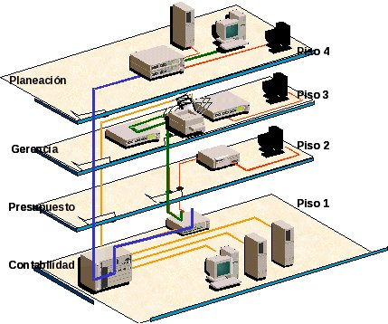

Redes de ordenadores: Modelo OSI y protocolos
|
|
|
1º de Bachillerato
|
|
Tecnologías de la Información y Comunicación
|
|
Contenidos
|
|
Redes de ordenadores:Modelo OSI y protocolos
|
|

Índice de contenidos
- 1 Clasificación de las redes
- 2 Modelo de referencia OSI y arquitectura TCP/IP
- 3 Características de las redes
- 3.1 Redes cableadas y redes inalámbricas
- 3.2 Topología de redes
- 3.3 Componentes de una red
- 3.4 Control de acceso al medio
- 4 Dispositivos de interconexión a nivel de enlace
- 5. Modelos de red y principales protocolos
- 5.1 Modelo cliente/servidor
- 5.2 Protocolo de Internet (IP). Enrutadores
- 5.3 Direcciones IP públicas y privadas
- 5.4 Protocolo de Control de la Transmisión (TCP)
- 5.5 Protocolo de Transferencia de Hipertexto (HTTP)
- Resumen
- Aviso legal
|
Img 0. Simil entre las personas y las redes Imagen de gabinetedeinformatica.net (Autor: Fernando S. - Licencia Creative Commons) |
1. Clasificación de las redes
La clasificación de las redes puede realizarse desde distintos puntos de vista, pero la más general es la que se realiza en función del número de equipos conectados y la distancia a la que se encuentran, de tal forma que hay tres tipos de red:
| Red de área local o LAN (Local Area Network).- se denomina así a las redes formadas por un número de equipos dentro de una zona limitada. Su aplicación más usual es la interconexión de ordenadores personales que comparten información, recursos y software. Las LAN permiten realizar procesos distribuidos repartiendo las tareas en distintos nodos, centralizando la información y facilitando la gestión de los recursos. Se utilizan en oficinas, instituciones, fábricas, etc. |

|
| Red de área metropolitana o MAN (Metropolitan Area Network).- son redes más extensas que las LAN. Proporciona capacidad de integración de múltiples servicios mediante la transmisión de información (datos, voz, vídeo) sobre medios de transmisión de alta velocidad tales como fibra óptica y par trenzado. Sus mayores ventajas son que posibilitan la comunicación de las LAN y que pueden utilizar tecnología Wifi. Pueden ser públicas o privadas y a veces incluyen áreas más extensas que las metropolitanas. | |
| Red extendida o WAN (Wide Area Network).- estas redes comprenden grandes zonas geográficas siendo la más conocida internet. Su función fundamental es la interconexión de equipos que se encuentran ubicados a grandes distancias, para lo que utilizan potentes nodos de conmutación. Se suele decir que tienen carácter público puesto que la información proviene de diferentes fuentes y es utilizada por multitud de usuarios, a deiferencia de las LAN incluso de las MAN, cuyo uso suele ser restingido. | |
|
Img 12, 13, 14. Redes LAN, MAN Y WAN Imágenes obtenidas en Open Course Ware bajo licencia CC |
Actividad
Las redes se pueden clasificar:
- Red de área local o LAN: redes formadas por un número de equipos dentro de una zona limitada.
- Red de área metropolitana o MAN: redes más extensas que las LAN. Utilizan medios de transmisión de alta velocidad.
- Red extendida o WAN: redes que comprenden grandes zonas geográficas. Un buen ejemplo puede ser Internet.
2. Modelo de referencia OSI y arquitectura TCP/IP
Profundizando en el mundo de las redes de ordenadores y siguiendo con las analogías con el mundo real, es posible que dos personas en cualquier parte del mundo puedan compartir un interés común. A modo de ejemplo, tenemos dos filósofos, uno español y otro ruso que necesitan compartir sus ideas. El primer problema que encuentran es el idioma y ambos necesitan un intérprete. El español necesita un intérprete que traduzca las ideas de español a inglés, por ejemplo. El traductor ruso, hace lo mismo con las palabras del ruso al inglés. Ambos traductores no tienen ni idea de cómo van a enviar las ideas desde España a Rusia y viceversa y necesitan un asistente que utilice un medio común para el envío de información. Ambos asistentes acuerdan que la mejor forma de intercambio de ideas es el fax ya que ambos disponen de uno en la oficina.
Este "puzzle" de comunicación queda resumido en la siguiente imagen:

Ejemplo de comunicación (analogía con el modelo OSI)
Imagen de elaboración propia
Esto es comparable a la torre de protocolos OSI o los protocolos TCP/IP que utilizan los ordenadores para poder comunicarse entre sí. Una aplicación de un ordenador sería comparable a un filósofo. La aplicación no tiene por qué saber qué sistema operativo tendrá el ordenador remoto o si los datos los recibirá a través de Wifi o un cable. Lo único que le interesa a la aplicación es hablar de lo mismo con la aplicación que reside en el ordenador del otro extremo. La aplicación no sabe cómo enviar los datos pero sí que tiene disponible un componente bajo ella a la que le puede enviar la información y desentenderse de los posibles problemas de comunicación.
La información, como se puede comprobar, va bajando de nivel en nivel hasta que llega al último y se envía. En el extremo remoto, la información va subiendo de niveles hasta que llega a la aplicación que está situada en lo más alto. Por el camino, es posible que el fax haya fallado y se ha tenido que volver a enviar o aspectos similares. Por tanto, en un ordenador conectado en red hay una torre de protocolos. Una aplicación como Google Chrome o Mozilla Firefox estarían en lo alto de la torre de protocolos actuando como cliente de la información y comunicándose con un servidor web situado en lo alto de la torre de protocolos del ordenador remoto.
Los filósofos utilizan algo que les une para entenderse. En este caso, es la filosofía. Los traductores también pueden usar algo en común que les une para poder intercambiar información y acordar un lenguaje común para este caso. Esto que une tanto a los filósofos, traductores, asistentes, etc. está representado en la imagen en línea discontinua y es el protocolo.
El modelo OSI es un ejemplo de torre de protocolos. Es un modelo muy completo pero no se usa en realidad. En la práctica, en las redes de ordenadores se utiliza un modelo simplificado: arquitectura TCP/IP.
Actividad
En toda computadora conectada en red, corre una torre de protocolos que permite que una aplicación que se está ejecutando pueda enviar datos a través de una red a otra aplicación corriendo en un ordenador remoto.
Una aplicación que intercambia datos con otra aplicación en otro ordenador, utilizan el mismo protocolo para ello.
El modelo OSI es un ejemplo de torre de protocolos. Es un modelo muy completo pero no se usa en realidad. En la práctica, en las redes de ordenadores se utiliza un modelo simplificado: arquitectura TCP/IP.
2.1. Capas de OSI
El modelo OSI para intercambio de datos entre dos ordenadores conectados en red fue creado por ISO (Organización Internacional para la Estandarización) formado por comités de estandarización de muchos países con el objetivo de mejorar la compatibilidad entre productos.
El modelo OSI es muy general y no especifica los protocolos que componen cada capa sino más bien las funciones que debía tener cada una. En este modelo se distinguen 7 capas:
1. Capa física
2. Capa de enlace
3. Capa de red
4. Capa de transporte
5. Capa de sesión
6. Capa de presentación
7. Capa de aplicación
En la siguiente imagen se refleja cómo quedaría esta modelo implementado para la comunicación entre dos ordenadores.

Modelo de referencia OSI
Imagen de elaboración propia
CAPA FÍSICA
En esta capa se definen:
- Las características físicas que describen cómo se envían datos a través de una medio de transmisión. Por ejemplo, si lo que hay que enviar son una serie de bits, se define la duración del envío de un bit por el canal, cómo se envía el bit (nivel alto o nivel bajo o una combinación de ambos), si es un cable habrá que especificar los niveles de tensión para el envío de ese bit, etc.
- Las características físicas que describen el interfaz entre la computadora y el medio de transmisión, es decir, se especifica el conector. A modo de ejemplo, un conector RJ-45 es un buen ejemplo. En él quedan especificados todos los aspectos físicos, como las dimensiones, el número de pines, la función que debe tener cada pin, etc.
CAPA DE ENLACE
Si dos elementos de red están conectados a través de un medio de transmisión, dentro de las funciones de la capa de enlace se encuentran el envío de datos libre de errores ya que hay que pensar que la posibilidad de que estos existan es importante. No se puede olvidar que un medio de transmisión puede ser compartido, por tanto, es posible que dos ordenadores traten de acceder al mismo tiempo produciéndose una colisión entre ambos. También se debe pensar que un ordenador puede ser más lento que otro, por tanto, en el envío de datos a través del medio hay que acordar una velocidad para la transmisión de datos. Los datos se envían a través del medio de transmisión enpaquetados. A un paquete de datos de la capa de enlace, se le conoce como trama.
CAPA DE RED
Como función principal de esta capa, se tiene el envío de datos de un origen a un destino . A diferencia de lo que ocurría en la capa anterior, los datos se envían desde un origen a un destino y no tienen por qué estar conectados a través de un medio de transmisión. Es decir, los datos que pertenecen a esta capa pueden pasar por otros elementos de red conocidos como router que se encargan de reenviar los paquetes por el camino adecuado en función la dirección de destino.
La complejidad de las funciones de esta capa aumentan ya que hay que tener en cuenta aspectos como la calidad del servicio que está relacionada con la velocidad en el intercambio de los datos en la red y que determina si se puede llevar a cabo un determinado servicio como una videoconferencia. También hay que tener en cuenta que los datos pueden viajar por redes de distinta naturaleza, por lo que es posible que el tamaño de los paquetes pueden ser diferentes y haya que controlarlo.
CAPA DE TRANSPORTE
La función principal de esta capa es ofrecer a las capas superiores una conexión libre de errores entre un origen y un destino. En el nivel de enlace, se ofreció una conexión libre de errores entre dos elementos de red conectados por un medio de transmisión. Ahora, es posible que haya varios saltos en el camino, por tanto, puede ser que los paquetes tengan un camino diferente para llegar al destino y es posible que lleguen desordenados. Es posible que por el camino se pierdan paquetes y haya que volver a retransmitirlos. Es decir, son muchas las dificultades que se pueden dar y que se resuelven en esta capa.
CAPA DE SESIÓN
En una computadora es posible que existan varias sesiones activas. Por tanto, dentro de las funciones de este nivel está la gestión de las mismas. Por ejemplo, se establecen puntos de referencia en las sesiones que se necesitarán para la recuperación de alguna en caso de interrupción de la conexión.
CAPA DE PRESENTACIÓN
En esta capa se trabaja con el contenido de la comunicación e importa poco los aspectos relacionados con la comunicación en sí. Cada ordenador puede tener su propia forma de representar los datos. Esta capa se encarga de la presentación de la información posibilitando que distintos equipos informáticos puedan tener representaciones internas diferentes. Se manejan estructuras de datos abstractas y se realizan las conversiones oportunas para que esta información se represente de forma correcta en el elementos de red en cuestión.
CAPA DE APLICACIÓN
Esta es la capa que se encuentra en lo alto de la torre de protocolos. Es la que utiliza la aplicación final y es la más cercana al usuario que es el que hace uso de la aplicación. Se encarga de ofrecer el acceso a las capas inferiores. A esta capa no accede el usuario directamente, sino que lo hacen los programas que maneja el usuario simplificando esta labor.
Actividad
El modelo de referencia OSI distingue las siguientes capas:
- Capa física: recoge las especificaciones del envío de datos a través del medio de transmisión así como las características de la interfaz entre el elemento de red y el medio de transmisión.
- Capa de enlace: ofrece el envío de datos libre de errores entre dos elementos de red conectados punto a punto.
- Capa de red: ofrece la posibilidad de enviar datos entre un origen y un destino aunque la información tenga que pasar por otros elementos de red. Entre las funciones importantes de esta capa está el encaminamientos de los datos que puede ser estático o dinámico.
- Capa de transporte: La función principal de esta capa es ofrecer a las capas superiores una conexión libre de errores entre un origen y un destino, aunque para ello haya que pasar por otros elementos de red.
- Capa de sesión: se encarga de la gestión de las sesiones activas de un ordenador.
- Capa de presentación: maneja estructuras de datos abstractas y posibilita que cada ordenador pueda utilizar su propia representación de la información.
- Capa de aplicación: se encarga de ofrecer a los programas de usuario el acceso a las capas inferiores. Se encuentra en lo alto de la torre de protocolos.
2.2. Arquitectura TCP/IP
La arquitectura TCP/IP, comparándola con el modelo OSI, se puede considerar como un modelo simplificado de la misma. Debe su nombre a los protocolos más importantes de este modelo: IP y TCP.
Tanto TCP/IP como el modelo OSI compitieron al principio. TCP/IP era más simple y se desarrolló antes frente a OSI, cuyas primeras implementaciones no tuvieron un resultado satisfactorio. Todo ello llevó a que TCP/IP se utilizara más, tuvieran lugar las primeras versiones con las consiguientes mejoras en detrimento del modelo OSI.
En la arquitectura TCP/IP se especifica muy poco en las capas inferiores (física y enlace) dejando unos interfaces muy abiertos que pueden variar mucho dependiendo del medio de transmisión que se utilice. Algo parecido ocurre en las capas superiores. No existe nivel de presentación y las funciones de esta capa han sido asumidas por la propia aplicación de usuario. La función de control del diálogo de la capa de sesión se ha trasladado a la capa de transporte.

Comparativa gráfica entre el modelo de referencia OSI y TCP/IP
Fuente: Tanenbaum, A. S. Redes de computadoras. Editorial Pearson Educación. 2003
Comparando TCP/IP con el modelo OSI, hay algunas desventajas en aquel. Una de las características muy positivas de OSI es su modularidad. Es decir, dado que se distingue perfectamente en conceptos como primitivas de acceso al servicio (con las que una capa superior puede solicitar un servicio a la capa inferior), protocolos (lenguaje que utilizan dos capas iguales de diferentes ordenadores para entenderse) e interfaz (límite que distingue el medio de transmisión y la capa de nivel físico), es fácil realizar un cambio de tecnología en este modelo sin que el resto de las capas se vean afectadas. Esto mismo no ocurre en TCP/IP debido a esa libertad o falta de especificación en algunas capas.
Una de las claves del éxito de TCP/IP se debe al protocolo IP (Internet Protocol). Este protocolo asegura el envío de paquetes de un origen a un destino pudiendo pasar por distintos elementos de red intermedios. Esto implica que cada paquete puede seguir un camino diferente y sufrir distintos retardos. Esta característica puede ser importante para el servicio que se esté llevando a cabo y puede ser necesario que se ordenen en el destino. Esta función la hace el protocolo TCP (Transmission Control Protocol).
En la capa de transporte, existen dos protocolos:
- TCP (Transmission Control Protocol) o protocolo de control de la transmisión. Es un protocolo orientado a la conexión y asegura una entrega de datos fiables. Este tipo de protocolos es necesario cuando se necesita, por ejemplo, que los paquetes se entreguen al destinatario ordenados.
- UDP (User Datagram Protocol) o protocolo de datagramas de usuario. Es un protocolo que ofrece una entrega de datos no fiable entre un origen y un destino. Este tipo de protocolos se utiliza cuando es necesario hacer una entrega puntual de un origen a un destino.
Actividad
La arquitectura TCP/IP tiene las siguientes características:
- Es parecida al modelo OSI pero simplificado.
- Se especifica muy poco en las capas inferiores del modelo dejando interfaces muy abiertos que pueden variar mucho dependiendo del medio de transmisión elegido.
- Se aligeran las capas superiores: no hay capa de presentación y algunas funciones de la capa de sesión se deja para la capa de transporte.
- TCP/IP tiene algunas desventajas como la falta de modularidad o independencia entre capas.
- La clave del éxito de TCP/IP radica en sus protocolos más importantes:
- IP (Internet Protocol) asegura una entrega de paquetes de origen a destino incluso pasando por elementos de red intermedios.
- TCP (Transmission Control Protocol) es un protocolo orientado a la conexión y asegura una entrega de datos fiables.
- UDP (User Datagram Protocol) es un protocolo que ofrece una entrega de datos no fiable entre un origen y un destino.
3. Características de las redes
Actividad
Actividad
Redes informáticas
Vídeo de carmigh (2014, Julio). Recuperado de https://youtu.be/hlQkQR9Zifk. Licencia de youtube estándar.
Una red de ordenadores tiene las siguientes características:
- Sistema distribuido. Las primeras redes de ordenadores eran sistemas centralizados, donde había un gran ordenador central con una serie de terminales conectados. Esto presentaba importantes inconvenientes: escalabilidad (era muy costoso incrementar la capacidad en este tipo de redes), falta de robustez ante fallos (si fallaba el ordenador central, la red completa quedaba indisponible), etc. Con el tiempo, se comprobó que los sistemas distribuidos presentaban un mejor rendimiento. La filosofía en este tipo de redes es dividir en partes las tareas o funciones y que cada componente de la red haga algunas de estas tareas.
- Compartir recursos. Una de las ventajas de las redes de ordenadores es la posibilidad de compartir recursos. Ya no es necesario que cada equipo informático tenga una impresora conectada a él sino que basta con disponer de un sola una impresora y conectarla directamente a la red o, al menos, a un ordenador y que este comparta el servicio de impresión con el resto de componentes de la red.
- Nuevas posibilidades de comunicación. Las redes de ordenadores permiten unas formas de comunicación impensables hace décadas. Con Internet, es posible comunicarse con cualquier punto del planeta de forma instantánea. Ni siquiera es necesario que llegue un cable, ya que con los accesos a la red a través de satélite hace que sea posible disponer de conexión de datos en cualquier parte.
- Nuevas posibilidades para obtener información y alcanzar el conocimiento a través de las redes. Con las redes de ordenadores, en general, y con Internet a la cabeza de todas ellas, las posibilidades de obtener información aumentan casi de forma exponencial. Como consecuencia, obtener el conocimiento gracias a las redes de ordenadores se ha hecho más sencillo.
- Nuevos servicios. Con las redes de ordenadores, han aparecido nuevos servicios y muchos de ellos muy complejos. A modo de ejemplo, se puede examinar la forma de viajar de hace años. En cualquier vehículo destinado al transporte había un mapa de carreteras o dispositivo específico para la navegación con altos costes de mantenimiento y actualización. Actualmente, todo eso ha desaparecido y solo es necesario disponer de un teléfono móvil con conexión a Internet que realiza esa misma función de una forma mejorada. Esto ha sido posible gracias a la evolución de la tecnología. No sería posible alcanzar las velocidades de intercambio de datos en una conexión a Internet sin la evolución de los medios de transmisión, como la fibra óptica. No sería posible conseguir esas aplicaciones tan maravillosas en los teléfonos inteligentes si no hubieran evolucionado las redes móviles. Basta con recordar los primeros servicios móviles relacionados con Internet como WAP o GPRS comparándolos con las velocidades de transmisión de ahora de varias decenas de Mpbs.
- Nuevo concepto: la nube. Con la aparición de la nube, son muchos los servicios que han aparecido y que se aprovechan de sus ventajas. Han aparecido nuevas formas de compartir información y de trabajar en grupo. Son muchos los nuevos servicios basados en los datos en la nube. Incluso, se ha mejorado las pérdidas de información con la nube. Un usuario que almacena sus fotos en la red sabe que ese disco duro virtual no es atendido únicamente por un servidor sino que detrás de todo ello hay una serie de computadoras que gestionan esos datos.
- Las prestaciones de una red. Se pueden medir de diferentes maneras como puede ser el tiempo de tránsito que los datos necesitan para ir de un nodo a otro o el número de usuarios que una red es capaz de soportar.
- La seguridad, vista como la capacidad que tiene la red para mantener los datos inalterados.
- La fiabilidad. Está relacionada con los fallos y la recuperación de la red ante los mismos. El tiempo de recuperación ante un fallo también es importante y tiene que estar controlado por el administrador para que esté por debajo de un máximo.
- El alcance de una red que da lugar a distintos tipos de red:
- Red de área personal o PAN (Personal Area Network) o redes de bajo alcance.
- Red de área local o LAN (Local Area Network) es una red que se limita a un área especial relativamente pequeña tal como un edificio o una casa.
- Red de área metropolitana (MAN, Metropolitan Area Network) es una red de alta velocidad que da cobertura a los núcleos urbanos.
- Redes de área amplia (WAN, Wide Area Network) o redes de largo alcance, son redes que dan cobertura a áreas geográficas extensas.
- Redes inalámbricas. Son redes sin hilos o wireless.
- El medio de transmisión que utilice la red como la fibra óptica, los cables de pares, el cable coaxial o, simplemente, el aire en el caso de redes inalámbricas.
- Por el modelo de comunicación que se usa, así tenemos un modelo cliente-servidor donde un servidor atiende las peticiones de uno o muchos clientes. Mientras que otro ejemplo son las redes peer-to-peer en la que no existe un servidor central o servidores activos todo el tiempo, sino que está compuesta por un conjunto de equipos que están activos de forma intermitente.
- La tecnología de una red. Existen una serie de estándares o normas donde se especifica las características de una red. Existen distintos tipos de redes, cada una basada en una tecnología existente, entre las que se pueden destacar las siguientes:
- Redes Ethernet especificado en el estándar IEEE 802.3.
- Redes Token Ring especificado en IEEE 802.5.
- Redes inalámbricas WLAN especificado en IEEE 802.11.
- Redes inalámbricas de área personal (WPAN) basadas en Bluetooth especificadas en IEEE 802.15.
- Redes FDDI que reúne un conjunto de estándares y vienen recogidos en la ISO 9314-x.
- Redes PPP especificadas en RFC 1661.
- Para el caso de las redes inalámbricas, la frecuencia de trabajo es muy importante. Así se tiene las redes bajo tecnología WiFi o Bluetooth que trabajan en la banda de frecuencias de los 2,4 GHz o 5 GHz, las redes de los sistemas de comunicación celular que lo hacen en las frecuencias de los 2 GHz o las redes WiMAX que pueden trabajar entre los 2 y los 11 GHz.
Actividad
Las características de una red de ordenadores son:
- Sistemas distribuidos. Las funciones se dividen en tareas que se reparten entre todos los elementos de la red.
- Compartir recursos: impresoras, discos duros, bases de datos, etc.
- Nuevas posibilidades de comunicación.
- Nuevas posibilidades de obtener información y de alcanzar el conocimiento a través de las redes
- Nuevos servicios.
- Nuevo concepto: la nube.
- Nuevas formas de negocio (Google o Facebook son un buen ejemplo) o nuevos sectores laborales como el marketing en buscadores (SEO/SEM) o gestión de comunidades.
3.1. Redes cableadas y redes inalámbricas
Las primeras redes que aparecieron en el mundo de las telecomunicaciones fueron las redes telefónicas. Posteriormente, en la década de los 60, surgieron las primeras redes de datos que usaban cables como medio de transmisión. Las primeras pruebas en la transmisión inalámbrica se hicieron en las universidades de Hawai. Se creó el protocolo ALOHA para el control de un enlace compartido entre varios terminales. Una modificación de este protocolo fue la base del Ethernet que fue clave para el desarrollo y expansión de Internet.
Con el tiempo, las redes han evolucionado. Hoy día se tienen dispositivos de red más pequeños y potentes. Los usuarios optan por la conexión inalámbrica en la mayoría de los casos ya que es posible la implantación de redes de forma rápida.
Si se observa la siguiente imagen, se puede ver qué dispositivos se usan para la conexión a Internet en España. Esto puede dar una idea del uso de redes inalámbricas comparándolas con las redes cableadas.
Dispositivo de acceso a Internet
Imagen de AIMC (Asociación para la Investigración de Medios de Comunicación) (2017, octubre - diciembre). Obtenida de la infografía resumen 20ª edición (octubre-diciembre 2017). Recuperado de http://download.aimc.es/aimc/ARtu5f4e/Infografia_naveg_20.pdf
REDES CABLEADAS
Son aquellas redes que utilizan un cable como medio de transmisión. Algunos ejemplos de redes cableadas.
- Redes Ethernet especificado en el estándar IEEE 802.3.
- Redes Token Ring especificado en IEEE 802.5.
- Redes FDDI que reúne un conjunto de estándares y vienen recogidos en la ISO 9314-x.

Red
Imagen de pixabay.com (autor: Martinelle). Recuperado de https://pixabay.com/es/red-cable-ethernet-computadora-1572617.
Licencia CC0 Creative Commons. Gratis para usos comerciales. No es necesario reconocimiento.
Las redes Ethernet son la que más éxito han tenido y las que más se utilizan.
REDES ETHERNET
Las redes de área local se especifican con el estándar IEEE 802.3.
Se distinguen dos categorías: banda base y banda ancha. La banda base se refiere al uso de una señal digital para el transporte de los datos. Hay cinco estándares distintos para la banda base:
- 10Base5: Cable coaxial, dmax = 500 m
- 10Base2: Cable coaxial, dmax = 185 m
- 10BaseT: Par trenzado, dmax = 100 m
- 10BaseF: Fibra óptica, dmax = 2000 m
El primer número hace referencia a la tasa de transmisión y el último, al tipo de medio de transmisión.
Un ordenador no puede estar alejado a más de 2,5 Km de otro (atravesando los repetidores que sean necesarios para ello) y ningún camino entre dos componentes de la red puede atravesar más de 4 repetidores.
FAST ETHERNET Y GIGABIT ETHERNET
Los servicios ha ido evolucionando con el paso de los años, por lo que este estándar se ha visto obligado a evolucionar. Así, se tiene dos variantes de Ethernet: Fast Ethernet (estándar 802.3u especificado a una tasa de 100 Mbps) y Gigabit Ethernet (estándar 802.3z especificado a una tasa de 1 Gbps). Uno de los éxitos de Ethernet ha sido que cada vez que ha aparecido una nueva variante, se ha tenido como requisito indispensable su compatibilidad con las versiones anteriores con lo que se ha facilitado su implantación.
REDES INALÁMBRICAS
Las redes inalámbricas se pueden clasificar de la siguiente manera:
- Redes de área personal sin hilos (WPAN)
- Redes de área local inalámbricas (WLAN)
- Redes inalámbricas de área extensa
- Sistemas de comunicación vía satélite
- Redes WIMAX
Móvil
Imagen de pixabay.com (autor: geralt). Recuperado de https://pixabay.com/es/tel%C3%A9fono-m%C3%B3vil-enviar-nearby-sms-2224001
Licencia CC0 Creative Commons. Gratis para usos comerciales. No necesita reconocimiento.
REDES DE ÁREA PERSONAL SIN HILOS (WPAN)
Mediante el término WPAN se engloba aquellas redes donde el medio de transmisión son las ondas de radio, pero el radio de acción se limita a pocos metros.
Bluetooth es la tecnología inalámbrica que permite facilitar las comunicaciones interpersonales entre la gente a través de un enlace radio barato y de corto alcance que permite el uso de dispositivos de pequeño tamaño, bajo coste y potencia baja.
Hay otras aplicaciones de este tipo de redes entre las que se puede mencionar: las aplicaciones IRDA, las etiquetas RF o la tecnología Zigbee.
La tecnología de IRDA (Infrared Data Association) trabaja con frecuencias comprendidas en la banda infrarroja. Tuvo bastante auge hace años aunque es cierto que cada vez está siendo desplazada por otros sistemas como Bluetooth. Las principales aplicaciones de IRDA son la conexión de dispositivos mediante enlaces punto a punto con visibilidad directa y con un bajo alcance (normalmente, en torno a un metro).
La tecnología RFID (ISO 15693) es un sistema muy novedoso que puede que haga desparecer a las tradicionales etiquetas con código de barras y lector de infrarrojos. Está compuesta por unas etiquetas RF o transpondedor que pueden almacenar información y transmitirla en caso de ser interrogadas. El problema que presenta el sistema de código de barras es la necesidad de tener que enfrentar el lector con la etiqueta por lo que obliga a hacer esta acción por cada artículo o elemento haciendo que tareas básicas de comprobación de stock en un almacén resulten tediosas. Esta labor se facilita enormemente con este sistema donde un lector dotado con interfaz inalámbrico puede leer aquellas etiquetas que estén bajo su alcance.
Los chips de las mascotas utilizan este sistema.
La tecnología Zigbee está basada en el estándar IEEE 802.15.4. Está pensada para aquellos dispositivos que requieren el intercambio de datos esporádicos cuyos requerimientos de tasas de transferencias son bajos no llegando a decenas o centenas de Kbps y alcances limitados, por debajo de las decenas de metros, donde lo que prima es la portabilidad, el coste, el tamaño y un consumo de potencia reducido. Son típicos ejemplos de aplicaciones el control remoto de dispositivos, juguetes y aplicaciones del hogar.
REDES DE ÁREA LOCAL INALÁMBRICAS (WLAN)
Las aplicaciones de redes inalámbricas son soluciones para el intercambio de datos en una red donde prima la flexibilidad y la portabilidad.
No todo son ventajas ya que para este tipo de aplicaciones es necesaria una inversión inicial. Además, cuando se necesita un enlace de muy alta velocidad, es más fácil conseguirlo con un cable que de forma inalámbrica, ya que en el interfaz aire debe viajar mucha información de control para contrarrestar la inestabilidad que presenta este canal.
En general, se suelen encontrar soluciones mixtas entre redes cableadas y redes inalámbricas en distintos entornos, ya sea empresarial o doméstico. Este tipo de soluciones mixtas tratan de complementar la red cableada y llegar a aquellos sitios donde es difícil hacerlo con un cable.
REDES INALÁMBRICAS DE ÁREA EXTENSA
Las aplicaciones que usan este tipo de tecnologías están condicionadas por la velocidad del acceso que se ofrece al usuario. Esta velocidad ha ido evolucionando a lo largo del tiempo. Actualmente, se tiene la tecnología LTE o 4G que permite unas velocidades de intercambio de datos teórica de hasta 168 Mbps, aunque en la realidad la tasas que se pueden alcanzar con un móvil en la red de cualquier operador oscilan en torno a los 20 Mbps. Ya se está en pruebas con la tecnología 5G que permitirá velocidades de transferencia de datos mucho mayores.
SISTEMAS DE COMUNICACIÓN VÍA SATÉLITE
Las aplicaciones de este tipo de sistemas son muy variadas como pueden ser el acceso a Internet, la educación a distancia, radiodifusión (televisión comercial, televisión corporativa, televisión por cable, etc.) o cualquier aplicación que implique enviar información a una ubicación de difícil acceso donde es algo impensable que pueda llegar el cable.
REDES WIMAX (TECNOLOGÍA IEEE 802.16)
WiMAX es una tecnología radio de banda ancha para redes metropolitanas basadas en el estándar IEEE 802.16 y fue bautizada como WMAN (Wireless Metropolitan Area Network). Tiene un alcance de decenas de Km (teóricamente pueden llegar hasta los 45 Km) y permite unas tasas de transmisión de datos en torno a los 70 Mbps. Este tipo de tecnología se está usando actualmente en entornos rurales, en aquellas ubicaciones donde es difícil llegar con otro medio de transmisión.
Actividad
Las redes inalámbricas están en auge respecto a las redes cableadas. No todo son ventajas en las redes inalámbricas. Por ejemplo, es más sencillo conseguir un enlace de muy alta velocidad con un cable (como la fibra óptica) que enviando información a través de ondas.
En las redes cableadas, destacan las redes Ethernet siendo las más populares y las que más se usan.
Las redes Ethernet han tenido que evolucionar dado que los servicios demandan cada vez mayores capacidades de transferencia de datos. Así se tienen las Fast Ethernet (100 Mbps) y las Gigabit Ethernet (1 Gbps).
Las redes inalámbricas se pueden clasificar:
- Redes de área personal sin hilos (WPAN). Destaca en este tipo de redes, la tecnología Bluetooth.
- Redes de área local inalámbricas (WLAN).
- Redes inalámbricas de área extensa. Son las redes de móviles actuales son su tecnología 4G.
- Sistema de comunicación vía satélite.
- Redes WIMAX. Esta tecnología se usa sobre todo en entornos rurales.
3.2. Topología de redes
La topología de una red es una de las primeras decisiones que se toman a la hora de responder a la pregunta ¿cómo vamos a conectar los ordenadores?
Distintos factores nos harán decantarnos por unas u otras topologías. Por ejemplo seguridad, control ante posibles fallos, coste o velocidad. Estos son algunos tipos de topología:
 |
| Imagen en Wikipedia de Yearofthedragon con licencia CC |
Existen tres tipos considerados básicos para montar una red.
|
Bus
Los nodos están conectados por un único canal de comunicaciones llamado bus, al cual se conectan también los diferentes dispositivos. De esta forma, todos los dispositivos comparten el mismo canal para comunicarse entre sí de forma que todos los nodos ven los mensajes, pero no todos los aceptan. Su principal ventaja es la facilidad de implementación, pero tiene desventajas como la limitación por longitud y las pérdida en la transmisión. |
|
|
Anillo
Los nodos están unidos unos con otros formando un círculo por medio de un cable común, estando unidos el último nodo con el primero para cerrar el anillo. Las señales circulan en un sólo sentido alrededor del anillo de modo que cada nodo tiene un receptor que examina la información y un transmisor que la envía. La desventaja del anillo es que si se rompe una conexión, la red deja de funcionar. Esto se soluciona haciendo redes de doble anillo, en las cuales si uno falla, la información pasa al otro. |
|
|
Estrella
Los nodos están conectados a un ordenador central o hub de modo que lo mensajes de cada nodo pasan directamente al servidor y éste decide hacia dónde enviarlos. La ventaja principal es que aunque falle algún nodo, el resto no se verá afectado. Sin embargo, es más costosa ya que el cable es único de nodo a servidor. |
|
|
Img 16, 17 y 18. Topologías básicas
Imágenes de producción propia
|
Actividad
La topología de una red define su estructura. Pueden establecerse la topología física, que es la forma en que se conectan los terminales, dispositivos y recursos de la red, y la topología lógica, que es la forma de acceso a la información de la red. La elección de una topología u otra influye en gran medida en el funcionamiento y configuración de la red.
Pregunta Verdadero-Falso
Acabas de ver las distintas topologías de redes que se pueden dar. Contesta a las siguientes preguntas fijándote en los contenidos de este punto.
Retroalimentación
Falso
La topología define la estructura de la red desde el punto de vista físico, estableciendo la forma de conexión de los equipos, como desde el lógico, estableciendo la forma de acceso a la información.
Retroalimentación
Verdadero
La topología de bus se basa en el uso de un canal único.
Retroalimentación
Verdadero
La red en anillo doble permite que, si un nodo falla, la información pase al otro anillo evitando así la ruptura de la red.
Retroalimentación
Falso
Este tipo de red tiene una topología de estrella.
Reflexión
Las típicas redes caseras ¿a qué tipo se asemeja más?
3.3. Componentes de una red
Actividad
Vamos a tratar ahora los componentes de una red.
Empecemos por tu ordenador. Necesitamos tener un dispositivo que convierta la información en señales, bien sea corriente eléctrica o por medio de ondas electromagnéticas.
Los dos medios más habituales son:
- Una tarjeta de red para cable. Es la habitual en los equipos de sobremesa. La gran mayoría son internas, se colocan en la placa base, en las ranuras de expansión. Convierten la información en corriente eléctrica.
- Una tarjeta wifi. Es la que traen incorporada la práctica totalidad de los portátiles. Convierten la información en ondas electromagnéticas.
Decimos que son los más habituales porque puedes tener alguna variante, por ejemplo, un adaptador wifi USB o los módem USB (que conocemos por "pinchos USB" ). Incluso en algunos modelos de móvil basta con conectar por usb al equipo y compartir la conexión. Es lo que se conoce como tethering. Por si fuera poco empieza a haber Internet a través del tendido eléctrico, tanto dentro como fuera de casa. Con enchufar un adaptador conectado al router y otro adaptador donde quieras tener conexión es suficiente. Te recomiendo que leas este artículo.
Lo habitual en una red doméstica es que los equipos se conecten directamente al modem-router (habitualmente llamado router), bien enchufando el cable de red en alguno de los puertos disponible bien por wifi.
¿Qué pasa si estamos en una red un poco más grande? ¿O si de un único cable de red queremos tener conectados dos equipos? Para esto tenemos los hub (concentradores) y los switch (conmutadores). Para que tengas una analogía, si de un enchufe queremos conectar el ordenador, el monitor, los altavoces y la impresora necesitamos usar una tripleta.
Con estos componentes: tarjeta de red, hub/switch y modem-router tendríamos nuestra red doméstica.
Para redes más complejas hay dispositivos específicos como puentes (bridges) para conectar tipos de redes distintas.
Ahora te mostramos algunos ejemplos y más datos:
Dispositivos de red
|
Tarjeta de red.- es un dispositivo que conecta el ordenador u otro equipo con el medio físico. La tarjeta NIC (Network Interface Card) es un tipo de tarjeta de expansión que proporciona un puerto para conectar el cable de red.
|
 |
| Hub/switch- son equipos que permiten organizar y estructurar el cableado de las redes, haciendo de punto de interconexión entre equipos de una misma red. |
|
| Puente o Bridge.- es un equipo que une dos tipos de redes distintas ando sobre los protocolos de bajo nivel (nivel de control de acceso al medio). Solo el tráfico de una red que va dirigido a la otra atraviesa el dispositivo, lo que permite a dividir las redes en segmentos lógicos, descargando de tráfico las interconexiones. |
 |
| Enrutador.- es un dispositivo de interconexión de redes que actúa a nivel de los protocolos de red. Permite utilizar varios sistemas de interconexión mejorando el rendimiento de la transmisión entre redes. Su funcionamiento es más lento que los bridges pero su capacidad es mayor. Permiten, incluso, enlazar dos redes basadas en un protocolo, por medio de otra que utilice un protocolo diferente. |
 |
| Módem.- es un dispositivo que permite a los ordenadores comunicarse entre sí a través de líneas telefónicas gracias a la modulación y demodulación de señales electrónicas que pueden ser procesadas. Los módems pueden ser externos o internos. Lo habitual es que en casa tengamos un modem-router. | |
|
Img 3,4,5,6,7 y 8. Dispositivos de red Banco de imágenes de ISFTIC |
Si queremos conectar equipos de una misma red, podemos utilizar un hub o un swith. Para saber cuál escoger, aquí tienes una comparativa de las ventajas e inconvenientes de cada uno.
|
Hub |
Ventajas |
Inconvenientes |
|
Dispositivo de capa 1 |
- Es barato. - No requiere configuración. |
- El rendimiento de la red es peor. - Únicamente se puede utilizar en redes pequeñas. |
|
Switch |
Ventajas |
Inconvenientes |
|
Dispositivo de capa 2 |
- El rendimiento de la red es mejor. - No requiere configuración, pero puede tener opciones extra. |
- Es más caro. - Puede complicarse su configuración. |
En cambio, si queremos conectar entre sí redes distintas, tenemos la opción de utilizar un bridge o un router. A continuación tienes una comparativa de ventajas e inconvenientes de ambos.
|
Bridge |
Ventajas |
Inconvenientes |
|
Dispositivo de capa 2 |
- Es barato. - Fácil de configurar. |
- Solo puede conectar equipos de la misma subred. - Difícil su utilización en redes grandes. |
|
Router |
Ventajas |
Inconvenientes |
|
Dispositivo de capa 3 |
- El rendimiento de la red es mejor. - Las redes pueden crecer prácticamente de forma indefinida, por lo que es muy escalable. |
- Puede encaminar los paquetes entre distintas subredes. - Configuración compleja. |
Medio de conexión
El medio de conexión o medio de transmisión es la forma de conectar físicamente los equipos y transmitir los datos, tanto los terminales entre sí como con el servidor o con otros dispositivos de la red. Tradicionalmente, el medio más utilizado ha sido el cable (trenzado, coaxial o fibra óptica), aunque también se han utilizado los medios inalámbricos (ondas de radio, microondas o infrarrojos).
AV - Reflexión
Es importante que conozcas los tipos de cables que se utilizan en las redes de ordenadores. Por eso te proponemos que realices un pequeña investigación y completes la siguiente tabla sobre los tipos más utilizados de cables.
| Tipo de cable | Descripción | Velocidad de transferencia | Ancho de banda | Imagen |
| Par trenzado (UTP): | ||||
| Cable coaxial: | ||||
| Fibra óptica: |
Puedes encontrar información en distintas páginas web. A modo de ejemplo, pincha aquí.
Terminal
Es cada uno de los ordenadores conectado a la red. También recibe el nombre de nodo o estación de trabajo. Suelen realizar sus propias funciones y contactan con los servidores cuando lo necesitan, bien sea para recurrir al uso de alguno de los recursos compartidos, bien para trabajar con alguna información contenida en él.
Servidor
Cuanto más compleja es una red más se especializan los equipos que la forman. Es el caso de los servidores.
Un servidor es un equipo o un programa que usan los demás componentes de la red. Alguna de sus funciones pueden ser: gestionar el correo que llega a la empresa, gestionar las impresoras, hacer copias de seguridad, incluso podemos tener el caso de terminales tontas.
El servidor físico puede ser uno de los ordenadores de la red con características similares al resto, si la red es de pocos equipos, o un ordenador mucho más potente si se trata de administrar muchos equipos o mucha información. El servidor ejecuta el sistema operativo de red y ofrece los servicios de red a las estaciones de trabajo.
Cuando el servidor es de software, se refiere a un sistema operativo de red (Network Operating System) que posibilita la comunicación entre equipos de una red. Su función es coordinar y manejar las actividades de los recursos del ordenador en una red.
 |
|
Img 2. Ejemplo de red de ordenadores Imagen obtenida de www.monografías.com (Autor: cecidsousa) |
En el siguiente apartado trataremos con más profundidad algunas aplicaciones de los servidores.
AV - Reflexión
Pre-conocimiento
¿Sabías que ...?
Cada tarjeta de red tiene un número único que la identifica: es la dirección MAC (siglas en inglés de Media Access Control o Control de Acceso al Medio) es un identificador de 48 bits (3 bloques hexadecimales) que corresponde de forma única a una tarjeta o dispositivo de red. Se conoce también como dirección física, y es única para cada dispositivo.
Esta dirección puedes encontrarla en Windows en: En "Buscar", escribe "cmd". Se te abrirá una ventana de comandos. Escribe en la nueva ventana "ipconfig /all". En el listado que te aparece, verás que de cada tarjeta que tienes conectada en tu PC, aparece los datos de la misma. Entre estos datos, está la dirección MAC o dirección física. En Linux, también puedes averiguarlo de una forma parecida. Abres una ventana de comando o terminal y debes escribir el siguiente comando "ifconfig -a".
Si consultas la dirección MAC de tu propia tarjeta de red, puedes averiguar cuál es el fabricante de la misma en la siguiente página web:
http://systemadmin.es/herramientas/traducir-mac-a-fabricante-del-equipo
3.4. Control de acceso al medio
Compartir concepto
Imagen de http://www.freejpg.com.ar (autor: bfishadow). Recuperado de http://www.freejpg.com.ar/free/info/100006207/compartir-concepto. Licencia Creative Commons CC BY
En una red de ordenadores, el medio de transmisión es fundamental. Sin él, no es posible intercambiar datos y una red dejaría de tener sentido.
Un medio de transmisión puede estar a disposición de solo un ordenador, aunque lo normal es que sea compartido por varios elementos.
Siempre que se habla de compartir un canal, es necesario aclarar ciertos conceptos que aparecen por el simple hecho de tener que compartir. Si dos componentes de la red quieren acceder al mismo tiempo al medio, se da una colisión. Debido a esa colisión, ninguno de los dos dispositivos consigue éxito en su transmisión porque se han "pisado" uno a otro.
Veamos la definición que la Wikipedia nos da sobre el concepto de colisión.
|
Un dominio de colisión es un segmento físico de una red de computadores donde es posible que las tramas puedan "colisionar" (interferir) con otros. Estas colisiones se dan particularmente en el protocolo de red Ethernet. A medida que aumenta el número de nodos que pueden transmitir en un segmento de red, aumentan las posibilidades de que dos de ellos transmitan a la vez. Esta transmisión simultánea ocasiona una interferencia entre las señales de ambos nodos, que se conoce como colisión. Conforme aumenta el número de colisiones disminuye el rendimiento de la red. |
Por tanto, siempre que se habla de un medio compartido al que pueden acceder a él distintos elementos de red, es necesario utilizar algún tipo de procedimiento que regule el acceso a dicho medio. Este procedimiento es muy importante y de él depende en gran medida el rendimiento de la red, sobre todo, cuando el número de componentes que comparten dicho medio es elevado.
Las redes Ethernet utilizan el acceso múltiple por detección de portadora y detección de colisiones (CSMA/CD) para detectar y manejar colisiones. En el siguiente vídeo, se explica de una forma muy gráfica en qué consiste un control de acceso al medio.
CSMA/CA
Vídeo de AR2 Flipped (2016, Abril). Recuperado de https://youtu.be/mnjgDhF-4ps. Licencia de youtube estándar
Actividad
En las redes de ordenadores, es normal que el medio de transmisión para intercambiar datos entre ordenadores sea compartido. Cuando se tiene un medio compartido, es posible que se den colisiones cuando dos ordenadores tratan de acceder al medio a la vez.
Para resolver las colisiones, se tiene que establecer un procedimiento que controle de forma eficiente el acceso al canal.
En las redes Ethernet se utilizar CSMA/CD para detectar y manejar colisones (CSMA/CD - Acceso Múltiple por Detección de Portadora y Detección de Colisiones).
4. Dispositivos de interconexión a nivel de enlace
Actividad
Recuerda que la función principal del nivel de enlace (nivel 2) es asegurar un intercambio de datos fiable entre dos elementos de red conectados a través de un medio de transmisión.
En una red, los dispositivos de interconexión más comunes son los siguientes:
- Repetidor. Este tipo de elementos de red son necesarios en redes que han crecido tanto que es necesario regenerar la señal eléctrica que viene por el cable para que pueda ser reconocida por todos los elementos de red que estén conectados al medio. En teoría, un repetidor no hace nada y se puede considerar como una extensión del cable (no añade ninguna información ni la quita). Realmente, no es transparente e introduce un inevitable retardo. Es por este motivo, por el que está limitado a 4 el número máximo de repetidores que puede haber en un segmento de una red Ethernet.
- Concentrador: Un concentrador o hub es un dispositivo con una serie de puertos ethernet a los que es posible conectar ordenadores. Cuando un PC envía una trama por un puerto, el concentrador la reenvía por todos los demás por lo que se comporta igual que un bus. Por tanto, en un concentrador todo aquello que se conecta pertenece al mismo dominio de colisión, donde es posible que dos ordenadores se interfieran. No hace nada con las tramas, no regenera la señal, ni la amplifica.
- Conmutador o switch. Un switch y un hub se puede decir que son muy parecidos y aparentemente realizan la misma función. Realmente, hay una diferencia radical entre ambos casos, ya que en una LAN con un concentrador, cuando un PC escribe en su cable, el hub reenvía esa información por todos los demás puertos. La red se comporta como si hubiera solo un cable al que todos los ordenadores están conectados, mientras que en el caso del switch con “n” puertos, se comporta como “n” redes independientes en la que cada red tiene un solo PC, por tanto, hay “n” dominios de colisión. En un switch, si una computadora A quiere hablar con otra B, la trama no se reenvía a todos los puertos del switch sino solo al puerto donde se encuentra la computadora B.
- Puente: Los puentes o bridge aparecen debido a la necesidad de conectar varias LAN. Con un puente todavía la distancia puede aumentar aún más cuando se desean conectar dos redes independientes que pueden ser colocalizadas o distantes.
- Router: Los enrutadores o router hacen una función parecida a la de un puente, pero trabaja en un nivel distinto. Un puente trabaja con la trama (capa 2 de OSI), mientras que un enrutador trabaja con el paquete de nivel de red.
Respecto a las capas de OSI, un concentrador y un repetidor pertenecen al nivel 1 o nivel físico. En cambio, los puentes y conmutadores se encuentran en el nivel de enlace o nivel 2. En un puente, es posible conectar LAN directamente a un puerto. En cambio, con un switch normalmente se suele conectar solo una computadora a un puerto del mismo.
Un router tiene dos funciones importantes. Una de ellas es la función de enrutamiento que consiste en construir las tablas para ello. Al igual que se ha visto para los puentes, cuando se alimenta a un router, tienen que aprender a enrutar los paquetes y así construir sus tablas. La otra función que tiene es la de reenvío en la que, una vez que ya tiene sus tablas completas, si llega un paquete de A hacia B, el router examina la dirección B va a sus tablas de enrutamiento y decide la interfaz por el que debe enviar el paquete.
Imagen de elaboración propia
4.1. Concentradores y conmutadores

Procesamiento de datos
Imagen de pixabay.com (autor: Martinelle). Recuperado de https://pixabay.com/es/red-cable-ethernet-computadora-1572617. Licencia CC0 Creative Commons. Gratis para usos comerciales. No es necesario reconocimiento.
Como ya se ha comentado, un hub y un switch tiene una función parecida. Ambos pertenecen al nivel 2 (nivel de enlace) en un la torre de protocolos de comunicación entre dos ordenadores. La función principal de estos dispositivos es la de ofrecer un enlace punto a punto fiable para el intercambio de datos entre dos ordenadores. Pero hay una diferencia fundamental entre un hub y un switch. Se puede decir que un switch es un hub inteligente.
Un hub es un dispositivo dotado de una serie de puertos RJ-45 a los que se le puede conectar un ordenador. Para ello, se necesita un cable de red que conecte el ordenador al hub. Si el número de ordenadores a conectar es elevado, es normal que haya que ampliar el concentrador o interconectar varios de ellos para poder crear la red.
Cuando se tienen 5 ordenadores (entre ellos, los PC A y B) conectados a un hub y el PC A transmite información para enviársela a B, ninguno de los 3 ordenadores restantes pueden transmitir nada ya que el medio de transmisión está ocupado por el envío de A. De hecho, el hub hace la misma función que un cable al que se conectan los 5 ordenadores.

Red con HUB que hace la misma función que una red con un bus
Imagen de elaboración propia
En cambio, si se sustituye en hub por un switch, cuando el PC A quiere enviar algo a B, las tramas que provienen por el puerto donde está conectado A solo se enviarán por el puerto en el que está conectado B, pudiendo el resto de ordenadores no involucrados en este diálogo comunicarse entre sí, aumentando el rendimiento de esta red de área local.
Visualiza el siguiente vídeo ya que explica de una forma muy gráfica la diferencia entre un concentrador y un conmutador.
¿Qué es un "Hub" y un "Switch"?
Vídeo de Franquicias TiendasAPP (2013, mayo). Recuperado de https://youtu.be/eNsJh2VqHTU. Licencia de youtube estándar.
Actividad
- Cuando un hub recibe tramas por uno de sus puertos, las reenvía por todos sus puertos excepto por el que las recibió.
- Cuando un switch recibe tramas por uno de sus puertos dirigidas a un ordenador concreto, las reenvía únicamente por el puerto donde está conectado ese ordenador, dejando el resto libre para posibles comunicaciones.
- Un switch es un hub inteligente.
4.2. Puntos de acceso

Sunroom Network Jack & Wireless Access Point
Imagen de www.flickr.com (autor: Kurt Magoon). Recuperado de https://www.flickr.com/photos/kmagoon/21874714459. Licencia CC BY-SA 2.0 de Creative Commons
Un punto de acceso también se le conoce por su siglas AP (Access Point) o WAP (Wireless Access Point). Este tipo de dispositivos se utiliza con frecuencia para dotar flexibilidad a una red local. Por ejemplo, en un edificio es muy difícil conseguir que en cualquier rincón haya un toma de red para conectar un ordenador. Tampoco es eficiente tirar un cable con una roseta para que sea usado de forma muy esporádica. Además, los nuevos dispositivos no suelen traer un puerto RJ-45 para conectarse a una red sino que están pensados para hacerlo de forma inalámbrica. Por tanto, complementar una red cableada con puntos de acceso que doten a la red de la posibilidad de conectarse a ella de forma inalámbrica es algo casi obligatorio viendo la evolución actual de las redes y sus usuarios.
Un punto de acceso hace una función parecida a la de una pasarela. Esto quiere decir que, básicamente, conecta redes de distinta naturaleza ya que amplía una red cableada haciendo posible que computadoras puedan intercambiar información con esa red de forma inalámbrica. Lógicamente, un AP suele disponer de, al menos, un puerto RJ-45 de forma que sea posible conectarlo a la red cableada.
Dicho de otro modo, un punto de acceso es un repetidor que se encarga de enviar los datos de un ordenador hacia un elemento de red de una LAN y también hace la función contraria, la de dirigir el tráfico de la LAN hacia un ordenador concreto. Entre ese ordenador y el punto de acceso, no hay cable y el intercambio de datos se realiza de forma inalámbrica. La distancia habitual que hay entre el ordenador y el AP suele ser de decenas de metros llegando incluso hasta los 100 metros.
Un AP crea una WLAN para que los dispositivos inalámbricos se puedan conectar a ella. A un AP se le asigna una dirección IP para que sea posible realizar labores de configuración y mantenimiento. También es posible conectar varios AP entre sí, para formar redes de área local mayores. La mayoría de los AP usan los estándares IEEE 802.11.
Actividad
Los conceptos principales relacionados con un AP (Access Point) son los siguientes:
- Se utilizan para dotar flexibilidad a una red local.
- Complementan una red cableada para que sea posible conectarse a ella de forma inalámbrica.
- Se puede decir que tiene la función de un repetidor ya que se encarga de enviar los datos de un ordenador hacia un elemento de red de una LAN y también hace la función contraria, la de dirigir el tráfico de la LAN hacia un ordenador concreto
4.3. Diagramas de una red local pequeña
4.3.1. Red cableada
En esta configuración tenemos una sala de informática con ordenadores de sobremesa y una impresora. Hemos conectado cada equipo a un switch o conmutador utilizando un cable par trenzado STP Cat6, formando una topología en estrella. Siempre que tengamos que contectar equipos o impresoras en una misma red cableada, utilizaremos un switch. También se podría utilizar un hub o concentrador, pero el rendimiento en la red es mucho peor.
A nivel lógico, las redes pequeñas suelen tener una máscara de red 255.255.255.0 o /24. Por ejemplo, esta red podría tener la IP 192.168.1.0/24. El primer equipo tendría la IP 192.168.1.1, el segundo 192.168.1.2... Así sucesivamente.
4.3.2. Red inalámbrica
En esta configuración tenemos una sala de reuniones, en la que la mayoría que los equipos serán portátiles o móviles. En este caso, es mejor plantear una infraestructura de red inalámbrica. Al igual que en la red anterior, un switch puede conectar los equipos de sobremesa. Además, conectaremos al switch un punto de acceso inalámbrico o access point (AP). Este dispositivo hace la función de un switch de forma inalámbrica, conectando todos los equipos a través de la tecnología wifi en una topología de estrella.
A nivel lógico, podemos mantener la misma configuración de IP que en el caso anterior.
5. Modelos de red y principales protocolos
Las primeras redes que hicieron su aparición fueron aquellos que seguían un modelo centralizado. En este modelo, existía un ordenador central, potente, que se encarga de asumir las tareas de todo el conjunto. A él se conectaban estaciones terminales, con muy poca capacidad de procesamiento.
Este tipo de modelos centralizados tenían grandes inconvenientes. Si el ordenador central tenía algún tipo de avería, la red entera quedaba indisponible. La escalabilidad de este tipo de redes es costosa. También presentaban problemas de integración con otros sistemas.
Así, aparecieron los sistemas distribuidos en los que se hacía un trabajo colaborativo para realizar las tareas. Hay distintos modelos que se pueden tener en los sistemas distribuidos. De todos ellos, se prestará especial atención al modelo cliente / servidor.
SISTEMAS DISTRIBUIDOS
La mayoría de los sistemas informáticos que se tienen actualmente son sistemas distribuidos donde el procesamiento se distribuye sobre todos los elementos de la red en lugar de centralizarse en uno solo. Se hace un procesamiento cooperativo donde los componentes de la red realizan una tarea común mediante el paso de mensajes a través de la red, con los que se comunican y se coordinan. Internet es un buen ejemplo de sistema distribuido.
Son muchas las ventajas de los sistemas distribuidos frente a los centralizados. La compartición de recursos es algo intrínseco en estos sistemas. Suelen ser sistemas abiertos en los que no hay tanta dificultad a la hora de combinar hardware y software de distintos fabricantes. Otro aspecto importante es la buena escalabilidad o la tolerancia a los fallos, dado que al ser un sistema distribuido, si se le añade un nuevo elemento, disminuye de forma proporcional la carga en otros o al contrario, si un elemento de red deja de realizar tareas, estás se reparten entre el resto.
Los modelos de red más habituales:
- Arquitectura cliente / servidor. Los elementos de la red actúan como clientes o como servidores. Es decir, un servidor ofrece un servicios para atender a los clientes a través de las peticiones de servicio. Un servidor de un servicio puede ser a su vez cliente de un servicio diferente.

Modelo cliente servidor
Imagen de Wikimedia Commons (Autor: Tiago de Jesus Neves). Recuperado de https://commons.wikimedia.org/wiki/File:Cliente-Servidor.png. Licencia CC BY-SA 3.0 de Creative Commons.
{kind=link}
- Servicios proporcionados por múltiples servidores. En este modelo existen varios servidores. Estos pueden realizar la misma función, por tanto, sería un sistema con redundancia en el que si uno pasa a indisponible, los otros lo sustituyen. También es posible que el servicio se divida en partes y cada servidor realiza una.
- Servidores proxy y cachés. Una caché es un almacén de datos utilizados recientemente. Cuando un cliente solicita un dato, el servicio comprueba si el dato se encuentra en la caché para proporcionárselo al cliente o busca una copia actualizada, guardando el dato nuevo. La caché puede residir en el cliente o en un servidor proxy. De esta manera se optimiza el tráfico que sale o entra de la red ya que si un cliente demanda una página web, es posible que no sea necesario acceder al servidor web donde reside la página a través de Internet, ya que se encuentra en la caché.

Servidor proxy en una red local con conexión a Internet
Imagen de elaboración propia
- Procesos de igual a igual. En este modelo hay una serie de objetos que interaccionan entre sí. No es importante si los objetos ofrecen un servicio o hacen uso de él ya que hacen una actividad distribuida trabajando de una forma cooperativa para llevarla a cabo. En este tipo de sistemas, es necesario que existan unos procesos de sincronización que aseguren la consistencia de los recursos compartidos.
- Variaciones en el modelo clientes – servidor:
- Código móvil: este tipo de modelos puede implicar una amenaza de la seguridad de una computadora. Se puede englobar como una tipología de modelo cliente / servidor, donde un cliente inicia un diálogo con un servidor que implica la descarga de un código (applet) que reside en este y se ejecuta en el cliente de forma local.
- Agentes móviles. Este tipo de modelos también puede suponer una amenaza potencial de la seguridad. Un agente móvil es un programa en ejecución que se va trasladando a distintos ordenadores de una red para realizar alguna función, como puede ser la instalación y mantenimiento de software.
- Computadoras en red. En este tipo de modelos, se tiene una serie de ordenadores conectados en red. En el disco local hay un software mínimo, pero la mayor parte de las aplicaciones, e incluso es posible que también el sistema operativo, reside en un servidor donde se van descargando las aplicaciones a medida que el usuario las va demandando.
- Clientes ligeros. En este tipo de modelo de red, hay una serie de ordenadores que básicamente se encargan de implementar la interfaz. Realmente, las aplicaciones no se ejecutan de forma local, sino que esto se hace en un servidor remoto. Evidentemente, cuando la necesidad de intercambio de datos entre el servidor con el resto de ordenadores es elevada, este tipo de solución no es la más adecuada como es el caso de programas de diseño gráfico o de CAD.
Actividad
La mayoría de los sistemas informáticos que se tienen actualmente son sistemas distribuidos donde el procesamiento se distribuye sobre todos los elementos de la red. Presentan ventajas frente a los centralizados (compartición de recursos, escalabilidad, tolerancia a fallos, etc.).
Los modelos de red más habituales:
- Arquitectura cliente - servidor: un servidor ofrece un servicios para atender a los clientes a través de las peticiones de servicio.
- Servicios proporcionados por múltiples servidores.
- Servidores proxy y cachés.
- Procesos de igual a igual. Los componentes de este modelo hacen una actividad distribuida trabajando de una forma cooperativa para llevarla a cabo.
- Variaciones en el modelo cliente - servidor: código móvil (applet), agentes móviles, computadores en red, clientes ligeros (solo implementan la interfaz gráfica y las aplicaciones se ejecutan en un servidor externo).
5.1. Modelo cliente / servidor

Modelo cliente servidor
Imagen de pixabay.com (Autor: sandra_schoen). Recuperado de https://pixabay.com/es/cliente-servidor-redes-341420 Licencia CC0 de Creative Commons. Gratis para usos comerciales. No es necesario reconocimiento.
El modelo cliente – servidor es una arquitectura que se utiliza mucho en la comunicación entre ordenadores. Es un modelo de comunicación simple pero a la vez eficiente. Es simple si se compara, por ejemplo, con el modelo de comunicación OSI en donde se produce la comunicación entre ordenadores simplemente con el intercambio de mensajes. No existe una torre de protocolos, por tanto, no hay que perder tiempo en interpretar las cabeceras. Tampoco hay que establecer una conexión entre los ordenadores implicados en la comunicación, por tanto, es una forma simple de intercambio de datos. De hecho, se dice que en este tipo de arquitecturas el acoplamiento entre las entidades involucradas es muy débil.
Lo normal es que se tenga un programa ejecutándose en una computadora. Puede que a este programa le haga falta algún dato y para ello existe un servidor al que el cliente puede hacer peticiones y obtener estos datos. Estas peticiones al servidor por parte de los clientes son transparentes para el usuario. Al final se le muestra el resultado del programa que él está ejecutando a través del cliente.
Lo único que necesita un cliente es tener conectividad con el servidor para poder enviarle consultas para obtener las respuestas. Puede existir uno o muchos clientes así como uno o varios servidores. Lo habitual es que haya más servidores que clientes. En un mismo ordenador puede haber software que haga que la computadora sea un cliente para también puede haber otros programas que hagan que el ordenador actúe como servidor.
En un modelo cliente – servidor, hay un programa que corre en una computadora que es el servidor y que ofrece un servicio. De hecho, está constantemente escuchando solicitudes de servicio por parte de clientes. El diálogo lo inicia los clientes con una solicitud de servicio que es recibida por el servidor, procesada y devuelto el resultado al cliente como respuesta a dicha solicitud.
Es posible que un cliente utilice un software propietario y tenga que comunicarse con un servidor que también utilice software de otro fabricante. En estos casos, la comunicación puede ser complicada y es necesario la utilización de un elemento intermedio que facilite esta comunicación. A este elemento se le conoce como middleware.
Actividad
En un modelo cliente – servidor, hay un programa que corre en una computadora que es el servidor y que ofrece un servicio. De hecho, está constantemente escuchando solicitudes de servicio por parte de clientes. El diálogo lo inicia los clientes con una solicitud de servicio que es recibida por el servidor, procesada y devuelto el resultado al cliente como respuesta a dicha solicitud.
FORMAS DE IMPLEMENTAR EL MODELO CLIENTE - SERVIDOR
El modelo cliente - servidor se puede implementar de distintas formas.
Una de ellas puede ser atendiendo a la naturaleza del servicio que ofrecen. Hay servidores de diferentes tipos:
Servidores de impresión. Este tipo de servidores suelen controlar los servicios de impresión de una red o un dominio. Lógicamente, deben tener la posibilidad de gestionar una o varias impresoras para poder repartir los trabajos de impresión y controlar las colas de los trabajos que van entrando. Un ejemplo de servidor de impresión muy simple puede ser un ordenador de una red de área local que tenga conectada una impresora y tenga compartida la misma para que otros usuarios puedan encontrar la impresora en la red y poder enviar trabajos para imprimir.
Servidores de ficheros. Estos servidores proporcionan a los ordenadores de una red o un dominio un medio de almacenamiento para poder leer y escribir datos. Esto implica una planificación de la red adecuada ya que en el segmento de red donde se encuentre el servidor va a existir bastante intercambio de información.
Servidores web. Este tipo de servidores son muy utilizados en la actualidad. Cualquier persona con unos conocimientos mínimos puede instalar en un PC un servidor web en el que se pueden alojar páginas web. Estas páginas estarán accesible a otros usuarios a través de un navegador web que utiliza el protocolo http para poder acceder a ellas.
Servidor de base de datos. Es muy frecuente que cuando un usuario quiere poner en marcha un servidor web, en el proceso de instalación, también sea necesario instalar un gestor de base de datos. Mediante una base de datos se puede almacenar información y hacer que esta sea fácilmente localizable de forma que cuando un cliente realice una consulta sobre unos datos que le hacen falta, la respuesta a la misma sea rápida. Como ejemplo, se puede comentar una página web que se dedica a la venta de unos productos. Cuando un usuario pone un filtro en una página para que se muestren los productos que cumplan unos determinados requisitos, lo normal es que esos productos estén almacenados y clasificados correctamente en una base de datos, de forma que el servidor web realice una consulta a la base de datos con los criterios establecidos. Con el resultado de la consulta, el servidor prepara la respuesta para enviársela al cliente y que el usuario pueda ver el resultado de su consulta.
Como se puede comprobar, servidores en función del servicio hay tantos como servicios existentes. En este apartado se han nombrado algunos a modo de ejemplo.
En la arquitectura cliente - servidor también es posible encontrar diferentes implementaciones en función del tamaño de los elementos de la arquitectura.
A modo de ejemplo nos podemos imaginar una aplicación o un programa que se puede instalar en un ordenador para presentar unos datos que residen en un servidor remoto. En este caso, es posible distinguir varias capas:
- Capa de presentación. La función de esta capa es la de presentar la información que el usuario ha solicitado.
- Capa de datos. En este capa, se tienen los datos almacenados de una forma adecuada para poder ser consultados eficientemente.
- Capa de negocio. Esta capa es la que se encuentra justo entre las dos anteriores. Por un lado, recibe las peticiones del usuario (que utiliza para ello la capa de presentación), se encarga de procesar la petición y de enviarle la respuesta a la misma. Lo normal es que esa petición necesite la consulta a unos datos concretos, para ello, la capa de negocio se encargará de hacer las peticiones oportunas a la capa de datos para obtener los datos necesarios. Además, se pueden establecer determinadas reglas para aceptar las peticiones de los usuarios.
Una vez que se han descrito las principales capas que se pueden tener en una arquitectura cliente - servidor, ahora es posible distinguir diferentes implementaciones en función del tamaño de los componentes de la arquitectura:
- Fat client (Thin server)
El cliente asume la capa de presentación y la de negocios, aprovechando de la potencia de procesamiento que puede tener cada cliente. Se deja para el servidor únicamente la capa de datos. Este modelo es poco flexible en cuanto a la mejora del servicio, ya que cualquier cambio implicaría la compilación del programa y reinstalación en todos los clientes.
Fat client (Thin client)
Imagen de elaboración propia
- Fat server (Thin client)
En este caso, el cliente solo asume la capa de presentación y se deja la capa de negocio y datos para el servidor. Como ventajas, en este caso se dispone de flexibilidad para ofrecer el servicio, ya que cualquier cambio que se produzca solo hay que actualizar el servidor que es donde reside la capa de negocio. En cambio, se deja todo el procesamiento al servidor de manera que se desaprovecha la posible potencia que puedan tener los clientes. También puede implicar un elevado intercambio de datos entre el servidor y los clientes, dado que estos se dedican única y exclusivamente a presentar la información que le ha preparado el servidor.
")
Fat server (Thin client)
Imagen de elaboración propia
Actividad
Hay distintas formas de implementar el modelo cliente - servidor:
- Atendiendo a la naturaleza del servicio que ofrecen. Hay tanto servidores como servicios posibles que pueden ser ofrecidos. Ejemplo: servidores de impresión, servidores de ficheros, servidores web, servidor de base de datos, etc.
- Atendiendo al tamaño de los elementos:
- Fat client (Thin server). Se aprovecha la potencia de los clientes. En ellos, residen la capa de presentación y de negocios.
- Fat server (Thin client). En el cliente solo reside la capa de presentación. Todo el procesamiento y la gestión de datos se deja para el servidor.
5.2. Protocolo de Internet (IP). Enrutadores

Internet Protocol Analysis
Imagen de commons.wikimedia.org (Autor: Dave Braunschweig). Recuperado de https://commons.wikimedia.org/wiki/File:Internet_Protocol_Analysis.png. Licencia CC BY-SA de Creative Commons 3.0
{kind=link}
PROTOCOLO IP
El protocolo IP (Internet Protocol) es el protocolo que se utiliza en Internet. Corresponde al nivel de red o nivel 3 y es uno de los responsables del éxito de Internet.
Actualmente, existen dos versiones de IP (versión 4 y versión 6). La versión 6 apareció debido a que IPv4 se estaba quedado sin direcciones libres. En la cabecera IP, existe un campo "Tiempo de vida" mediante el cuál se puede controlar el tiempo que un paquete está viajando por la red. Si supera un número de saltos máximo, el paquete se descarta y se informa al origen de dicho suceso.
Cualquier equipo conectado a una red, necesita estar identificado de forma que otros equipos informáticos puedan enviarle datos encapsulados en paquetes. Esta identificación se consigue con la dirección IP, por tanto, todos los dispositivos en una red tienen que tener asignada una dirección IP. Las dirección IPv4 son de 4 bytes (32 bits). En un mensaje de este protocolo deben viajar tanto la dirección de origen como la dirección de destino.
Con la versión 6 de IP, se supone que se eliminan aquellos aspectos negativos de la versión 4 y añade mejoras. Además, se sigue manteniendo la modularidad, es decir, es compatible con las capas superiores. A diferencia de los 4 bytes de IPv4, en esta versión se tienen 16 bytes por lo que sería prácticamente imposible agotarlas. La idea es proporcionar múltiples niveles de jerarquía y flexibilidad en el diseño del direccionamiento y enrutamiento jerárquicos.
Entre las mejoras que introduce, destaca la simplificación de las cabeceras de este protocolo haciendo que sea más sencilla la conmutación en los router. También introduce mejoras en cuanto a la calidad de servicio, dado la creciente aparición de aplicaciones web que demandan distintos tipos de requerimientos.
ROUTER
Un router o encaminador de paquetes posiblemente sea el elemento más importante en una red. Se encarga de dirigir los paquetes que entran por alguno de sus interfaces y, de acuerdo a unas tablas de encaminamiento que dispone, selecciona el interfaz de salida en función de la dirección de destino del paquete.
Un router pertenece al nivel de red en el modelo de OSI. En el modelo TCP/IP, en este nivel se tiene IP (Internet Protocol).
La función del router es analizar los paquetes que le llegan, para ello comprueba la dirección IP del destino de los paquetes y busca la acción a realizar en la tabla de enrutamiento. El resultado puede ser que el equipo al que van los paquetes pertenezcan a una subred que es controlada por el router, por tanto, solo tendría que enviar los paquetes por el puerto correspondiente. Puede ser que no sea así y tenga que enviarlo por otro interfaz que tendrá otro router en el extremo opuesto que sabrá qué hacer con ese paquete.
Además, el éxito de este protocolo radica en el dinamismo de las tablas de encaminamiento de los router. Son tablas dinámicas que se actualizan, de manera que normalmente no se define en una red solo un camino para alcanzar un destino, sino que se configura para que haya varias alternativas. Si un enlace queda indisponible, los paquetes que necesitan dicho enlace para alcanzar al destino, usarán una ruta alternativa hasta que se recupere.
En entornos domésticos, es frecuente encontrar un router que realizan varias funciones en una red local. En primer lugar, hace la función de concentrador ya que dispone de puertos RJ-45 a los que se puede conectar algún equipo informático mediante cable. Además, la mayoría de estos router dota a la red local de acceso inalámbrico dotándola de gran flexibilidad.
Router
Imagen de pixabay.com (autor: annca). Recuperado de https://pixabay.com/es/wlan-web-acceso-internet-3131127. Licencia CC0 Creative Commons. Gratis para usos comerciales. No es necesario reconocimiento.
Actividad
- El protocolo IP: El protocolo IP (Internet Protocol) es el protocolo que se utiliza en Internet. Corresponde al nivel de red o nivel 3 y es uno de los responsables del éxito de Internet.
- Router o encaminador de paquetes: Posiblemente es el elemento más importante en una red. Se encarga de dirigir los paquetes que entran por alguno de sus interfaces y, de acuerdo a unas tablas de encaminamiento que dispone, selecciona el interfaz de salida en función de la dirección de destino del paquete.
5.3. Direcciones IP públicas y privadas
| Fuente propia a partir de la imagen de Antoine en JURA-NUX con licencia CC |
Seguro que te has preguntado cómo sabe el ordenador llegar hasta una página web determinada. O como en casa, con una sola línea telefónica, podemos tener varios ordenadores sin que se mezcle la información.
A estas alturas ya sabes que usamos una tarjeta de red para conectarnos. Estos dispositivos tienen un identificador, dirección MAC, grabado de fábrica (igual que los números de bastidor de coches). La MAC es un identificador de 48 bits (6 bloques hexadecimales). Un ejemplo de MAC Address es la siguiente: 0A:12:AF:1A:00:22
Partiendo de ese número único necesitamos tener una dirección IP (IP es acrónimo de Internet Protocol, el conjunto de normas que permiten enviar datos a través de la red).
Esta dirección depende de cada red a la que estemos conectados. Lo más habitual es que permitamos que esto sea automático y si nos vamos con el portátil a una cafetería no haya que configurar nada. Las direcciones IP son cuatro grupos de números, cada grupo entre 0 y 255 y separadas por un punto (ejemplo, 85.120.66.212).
DIRECCIONES IP PÚBLICAS Y PRIVADAS
Las direcciones IP pueden ser públicas o privadas. Las direcciones públicas son únicas y un equipo conectado a Internet, solo puede tener una dirección única en la red. En cambio, las direcciones IP privadas se usan en las redes locales, para identificar a los equipos dentro de la red local. Dos equipos de distintas redes privadas pueden tener la misma dirección privada ya que no es posible que haya una comunicación entre ambos. Un equipo no puede enviar datos en Internet con paquetes IP en los que aparezca la dirección IP privada como dirección de origen.
Podemos verlo de la siguiente forma: cuando vamos a un hotel tenemos un número de teléfono interno, por ejemplo para hablar con la habitación 103 marcamos #103. Esto nos identifica dentro del hotel. Pues cuando te conectas a la red de tu casa, oficina, escuela, es decir, a una red privada, tu equipo usa una dirección IP que lo identifica dentro de la red y que es privada.
Además el hotel tiene su número de teléfono público. Cuando llamas desde tu casa a la habitación de un hotel marcas el número público y pides en recepción que te pasen con la habitación 103 o incluso, puede que la habitación 103 tenga un número de teléfono público asignado. Ese número es único en todo el mundo.
El rango de direcciones que se han reservado para su uso en una red de área local, es decir, para tráfico interno dentro de la red es:
10.0.0.0 - 10.255.255.255
172.16.0.0 - 172.31.255.255
192.168.0.0 - 192.168.255.255
169.254.0.0 - 169.254.255.255
Otro ejemplo que te ayudará: cuando tú quieres leer el periódico tecleas su URL (aunque comúnmente llamamos dirección).
Ahí entra en juego el servidor DNS que te dice que la dirección IP de la página que quieres ver.
Le dices al router que quieres conectarte a esa dirección IP. El router sabe que eres tú y que en el paquete aparece una dirección IP privada que debe cambiar y pone su dirección IP pública marcando el paquete para poder devolver la respuesta al PC adecuado de la red privada. La petición va pasando, gracias al protocolo IP, través de otros router que componen Internet hasta llegar al servidor donde reside la página web del periódico. Este devuelve a la dirección IP pública (la dirección del router) la respuesta enviando la página web, las fotos, los titulares, etc.
El router reconoce la respuesta y la dirige a tu equipo en concreto usando para ello la dirección IP privada .
AV - Actividad de Espacios en Blanco
Veamos de nuevo la imagen del encabezamiento. Es un esquema de red en la que hay un router, un switch al que conectamos un servidor y un pc.
| Fuente propia a partir de la imagen de Antoine en JURA-NUX con licencia CC |
¿Repondemos a unas preguntas sencillas?
Actividad
Las direcciones IP pueden ser públicas o privadas. Las direcciones públicas son únicas y un equipo conectado a Internet, solo puede tener una dirección única en la red. En cambio, las direcciones IP privadas se usan en las redes locales, para identificar a los equipos dentro de la red local. Dos equipos de distintas redes privadas pueden tener la misma dirección privada ya que no es posible que haya una comunicación entre ambos. Un equipo no puede enviar datos en Internet con paquetes IP en los que aparezca la dirección IP privada como dirección de origen.
5.4. Protocolo de Control de la Transmisión (TCP)

Pila TCP IP
Imagen de wikimedia.org (Autor: Telematicauc3m). Recuperado de https://es.m.wikipedia.org/wiki/Archivo:Pila_tcp_ip.png
{kind=link}
Licencia Creative Commons Genérica de Atribución/Compartir-Igual 3.0
CAPA DE TRANSPORTE
De forma general, la capa de transporte ofrece la fiabilidad necesaria para el intercambio de datos entre un origen y un destino. Es la capa superior a la de transporte la que determina el grado de fiabilidad que se necesita, liberando a la capa superior de aspectos como el camino que deben recorrer los datos para alcanzar el otro extremo o si hay que hacer una recuperación porque se ha producido una caída de la conexión.
En la arquitectura TCP/IP hay dos protocolos de transporte:
- Protocolo UDP (Protocolo de Datagrama de Usuario)
- Protocolo TCP (Protocolo de Control de Transmisión)
PROTOCOLO UDP
Mediante este protocolo es posible el intercambio de datos entre un origen y un destino sin que se haya establecido una conexión previamente. Es decir, cuando se usa este protocolo es porque no es necesario que exista un control de flujo en la comunicación o no es necesario que se confirme que se han recibido unos datos, por tanto, es un intercambio de datos no fiable.
Este tipo de protocolos se utiliza cuando son pocos los datos a enviar frente la información de control necesaria que se requiere para una transmisión fiable. Otro caso en el que se puede encontrar es para el envío de audio y vídeo a través de la red, donde existen estrictos requisitos de retardo y no es posible hacer retransmisiones.
PROTOCOLO TCP
Este protocolo posibilidad el intercambio de datos entre un origen y un destino de forma fiable, esto quiere decir que los datos se entregarán a la capa superior sin errores y en el mismo orden en el que se recibieron. Además, hay que tener en cuenta que la red se puede comportar de diferente manera según la carga que tenga, por tanto, el protocolo debe tener distintos mecanismos que se adapten a distintas situaciones.
En un ordenador, hay aplicaciones por encima de la capa de transporte que hacen uso de ella para poder enviar datos a un equipo remoto. Las aplicaciones acceder a los servicios de TCP mediante los puertos. Por tanto, un ordenador se mantiene constantemente a la espera de recibir datos de aplicaciones remotas por un puerto o recibirlos de aplicaciones del propio ordenador. Son muchas las aplicaciones a las que da soporte TCP como los navegadores o el intercambio de ficheros mediante ftp y protocolos de aplicación HTTP, SMTP, SSH y FTP.
Para especificar el puerto TCP se tienen 16 bits por lo que hay un total de 65536 puertos posibles. De todos ellos, los puertos menores de 1024 son puertos muy conocidos como es el caso del puerto 21 para ftp o el puerto 80 de “http”.
Actividad
Dos ordenadores que siguen una arquitectura TCP/IP para comunicarse, pueden utilizar TCP como protocolo de transporte.
La capa de transporte ofrece la fiabilidad necesaria para el intercambio de datos entre un origen y un destino.
Los protocolos de la capa de transporte son:
- Protocolo UDP (Protocolo de Datagrama de Usuario) para el intercambio de datos no fiable entre un origen y un destino.
- Protocolo TCP (Protocolo de Control de Transmisión) para el intercambio de datos fiable entre un origen y un destino.
Para poder acceder a las aplicaciones que usan los servicios de la capa de transporte se tienen los puertos. Los que son menores de 1024 son puertos muy conocidos como es el caso del puerto 21 para ftp o el puerto 80 de “http”.
5.5. Protocolo de Transferencia de Hipertexto (HTTP)
HTTP es el protocolo que se utiliza en la red para navegar y que un usuario pueda ver una página web, escrita en HTML, en su navegador. Para ello, mediante HTTP un cliente puede solicitar a un servidor web una determinada página web así como todos los elementos de la misma como pueden ser imágenes u otros elementos multimedia.
El protocolo HTTP es un protocolo de aplicación (recuerda las capas de OSI en la comunicación entre dos ordenadores que se vio en el punto 2.1 de este tema). Esto quiere decir que está montado sobre TCP/IP, que son las capas de transporte y red, respectivamente. Utiliza el puerto 80 de TCP para la creación de conexiones HTTP.
Es muy frecuente confundir HTTP con HTML:
- HTTP es el protocolo para el intercambio de páginas web. Es decir, mediante HTTP se especifica cómo son los mensajes que un cliente y un servidor web pueden intercambiarse para que el servidor le envíe al cliente la página web que este ha solicitado.
- HTML es el lenguaje mediante el cuál se elaboran las páginas web. De hecho, si se abre una página web con el editor de texto, se verá que una página está hecha mediante texto. También aparecen unas marcas que indican cómo presentar ese texto en el navegador.

Diálogo entre cliente y servidor web usando HTTP
Imagen de elaboración propia
Las primeras versiones de HTTP aparecieron en los noventa. No fue hasta 1999, año en el que apareció HTTP/1.1 y que ha supuesto la versión de este protocolo más utilizada hasta el momento. Esta versión, como es normal, mejoraba a las versiones predecesoras pero presenta alguna desventaja:
- Los mensajes del protocolo están creados en texto plano y esto puede traer algún problema con las mayúsculas, minúsculas, espacios en blanco, etc.
- No hacía un uso eficiente del año de banda. Aunque HTTP/1.1 permitía hacer uso de una conexión TCP y a través de ella enviar todos los objetos de una página web, los navegadores usaban un método alternativo para conseguir que las páginas web se cargarán más rápido. Para ello, habrían varias conexiones TCP en paralelo para mejorar la experiencia del usuario a pesar de malgastar recursos.
- Cada mensaje que se envía en este protocolo contiene información repetida. Es información redundante cuya única consecuencia es desaprovechar el ancho de banda.
El protocolo HTTP/2.0 se empezó a utilizar en 2015 y mejoraba diferentes aspectos de su versión anterior:
- Es un protocolo binario para el intercambio de mensajes evitando los problemas del texto plano.
- Mejora el uso del ancho de banda evitando las conexiones en paralelo de HTTP/1.1. Ahora se hace uso de una conexión TCP y sobre ella se pueden enviar varios flujos (el concepto de flujo es nuevo en esta versión del protocolo).
- Mejora el uso del ancho de banda con la compresión de la cabecera de los mensajes, esto quiere decir que se evita enviar en cada mensaje información redundante.
- Mediante este protocolo, el servidor se adelanta a las necesidades del cliente. A esta funcionalidad se le conoce como "server-push". Cuando un cliente solicita el establecimiento de una conexión, mientras esta se establece, el servidor se adelanta y empieza a enviar pequeños mensajes con datos que seguramente solicitará más adelante y que se almacenarán en la caché del cliente. De esta forma, cuando el cliente solicite los contenidos de la página web, gran parte de estos ya estarán en su caché por lo que se mejora el rendimiento de la comunicación.
La mejor forma de entender el funcionamiento de HTTP, es analizando una petición de un cliente de una página web o de un objeto de la misma. Por ejemplo, si abrimos un navegador y escribes el siguiente enlace:
http://www.juntadeandalucia.es/educacion/portals/web/ieda/
{kind=link}
Esta dirección se divide en las siguientes partes:
En la primera parte de la URL, se indica al navegador el protocolo que se va a utilizar. A continuación, se especifica el servidor el cuál contiene la página web. En último lugar, se indica el path o camino donde se encuentra ubicada la página web en el servidor.
En este caso, no se ha indicado la página web (como puede ser index.html) dentro del path o camino. Esto se puede configurar en el servidor web, de forma que se envíe el contenido de una página web aunque en la petición no se indique ninguna.
Un servidor debe tener una dirección IP que lo identifique de forma inequívoca en Internet. Como se acaba de comprobar, en la URL no aparece dirección IP alguna. Esto se hace porque para el usuario es mucho más cómodo recordar nombres que números. Pero entonces, ¿cómo sabe el ordenador del usuario dónde tiene que enviar la petición HTTP? Es aquí donde entra en juego el servidor de nombres o DNS (Domain Name System). El cliente lanza una petición al DNS solicitando la dirección IP de www.juntadeandalucia.es. El DNS responde con la dirección IP que es la que utiliza el ordenador del usuario para poder enviar los datos. Cuando esta petición le llega al servidor, este responderá con el contenido de la página web y que el navegador pueda mostrar la página web al usuario.
Este camino se resume en la siguiente imagen:

Petición de una página web por parte de un cliente a un servidor web
Imagen de elaboración propia
Como se puede comprobar, en los pasos 1 y 2, el ordenador del usuario lanza la petición al DNS para obtener la dirección IP del servidor web. Con esta dirección, puede iniciar el diálogo con el servidor para que este le pueda enviar la página web así como todos los objetos que la contienen y poder representarla correctamente.
Objetivos
¿Qué diferencia hay entre HTTP y HTTPS?
Seguro que has visto en muchas ocasiones que una URL empieza por HTTPS en lugar de HTTP. Es más, es probable que no veas nada, que no se indique el protocolo que estás utilizando pero el navegador. Por ejemplo, en Google Chrome, si escribes una URL empezando por "http://", justo al lado de la misma verás que hay una etiqueta que indica "no seguro". Esto desaparece si la URL empieza por "https://". Haz la prueba con la siguiente dirección:
Comprobarás que en el primer caso, el navegador Chrome muestra la siguiente información:

URL que empieza por "http://"
Imagen de elaboración propia
Mientras que en el segundo caso, se muestra lo siguiente:

URL que empieza por "https://"
Imagen de elaboración propia
HTTPS es un protocolo seguro y se utiliza en Internet cuando los datos que viajan por la red son sensibles o personales, como puede ser un usuario y contraseña o información bancaria. Esta información viaja encriptada en la red por lo que si alguien intercepta los paquetes no va a poder hacer nada con ellos. Solo el origen y del destino de la información serán capaces de descifrar los datos.
Actividad
HTTP es el protocolo que se utiliza en la red para navegar y que un usuario pueda ver una página web, escrita en HTML, en su navegador. Mediante HTTP un cliente puede solicitar a un servidor web una determinada página web así como todos los elementos de la misma como pueden ser imágenes u otros elementos multimedia.
La versión actual de este protocolo es HTTP/2.0 que mejora a sus predecesoras sobre todo optimizando el ancho de banda.
Una dirección de una página web está compuesta:
- Protocolo (puede ser http o https).
- Servidor (normalmente es una etiqueta de texto que identifica al servidor como puede ser "www.juntadeandalucia.es").
- Path o camino donde se localiza la página web dentro del servidor.
Cada vez con más frecuencia, es más normal ver el protocolo HTTPS que HTTP. HTTPS es un protocolo seguro y se utiliza en Internet cuando los datos que viajan por la red son sensibles o personales, como puede ser un usuario y contraseña o información bancaria. Esta información viaja encriptada por lo que si alguien intercepta los paquetes no va a poder hacer nada con ellos. Solo el origen y el destino de la información serán capaces de descifrar los datos.
Resumen
CLASIFICACIÓN DE LAS REDES
Las redes se pueden clasificar:
- Red de área local o LAN: redes formadas por un número de equipos dentro de una zona limitada.
- Red de área metropolitana o MAN: redes más extensas que las LAN. Utilizan medios de transmisión de alta velocidad.
- Red extendida o WAN: redes que comprenden grandes zonas geográficas. Un buen ejemplo puede ser Internet.
MODELO DE REFERENCIA OSI Y ARQUITECTURA TCP/IP
En toda computadora conectada en red, corre una torre de protocolos que permite que una aplicación que se está ejecutando pueda enviar datos a través de una red a otra aplicación corriendo en un ordenador remoto.
Una aplicación que intercambia datos con otra aplicación en otro ordenador, utilizan el mismo protocolo para ello.
El modelo OSI es un ejemplo de torre de protocolos. Es un modelo muy completo pero no se usa en realidad. En la práctica, en las redes de ordenadores se utiliza un modelo simplificado: arquitectura TCP/IP.
El modelo de referencia OSI distingue las siguientes capas:
- Capa física: recoge las especificaciones del envío de datos a través del medio de transmisión así como las características de la interfaz entre el elemento de red y el medio de transmisión.
- Capa de enlace: ofrece el envío de datos libre de errores entre dos elementos de red conectados punto a punto.
- Capa de red: ofrece la posibilidad de enviar datos entre un origen y un destino aunque la información tenga que pasar por otros elementos de red. Entre las funciones importantes de esta capa está el encaminamientos de los datos que puede ser estático o dinámico.
- Capa de transporte: La función principal de esta capa es ofrecer a las capas superiores una conexión libre de errores entre un origen y un destino, aunque para ello haya que pasar por otros elementos de red.
- Capa de sesión: se encarga de la gestión de las sesiones activas de un ordenador.
- Capa de presentación: maneja estructuras de datos abstractas y posibilita que cada ordenador pueda utilizar su propia representación de la información.
- Capa de aplicación: se encarga de ofrecer a los programas de usuario el acceso a las capas inferiores. Se encuentra en lo alto de la torre de protocolos.
La arquitectura TCP/IP tiene las siguientes características:
- Es parecida al modelo OSI pero simplificado.
- Se especifica muy poco en las capas inferiores del modelo dejando interfaces muy abiertos que pueden variar mucho dependiendo del medio de transmisión elegido.
- Se aligeran las capas superiores: no hay capa de presentación y algunas funciones de la capa de sesión se deja para la capa de transporte.
- TCP/IP tiene algunas desventajas como la falta de modularidad o independencia entre capas.
- La clave del éxito de TCP/IP radica en sus protocolos más importantes:
- IP (Internet Protocol) asegura una entrega de paquetes de origen a destino incluso pasando por elementos de red intermedios.
- TCP (Transmission Control Protocol) es un protocolo orientado a la conexión y asegura una entrega de datos fiables.
- UDP (User Datagram Protocol) es un protocolo que ofrece una entrega de datos no fiable entre un origen y un destino.
CARACTERÍSTICAS DE LAS REDES
Una red es un conjunto de ordenadores conectados entre sí a través de algún medio (cables, señales, ondas), de tal forma que pueden compartir información, recursos o servicios.
Las características de una red de ordenadores son:
- Sistemas distribuidos. Las funciones se dividen en tareas que se reparten entre todos los elementos de la red.
- Compartir recursos: impresoras, discos duros, bases de datos, etc.
- Nuevas posibilidades de comunicación.
- Nuevas posibilidades de obtener información y de alcanzar el conocimiento a través de las redes
- Nuevos servicios.
- Nuevo concepto: la nube.
- Nuevas formas de negocio (Google o Facebook son un buen ejemplo) o nuevos sectores laborales como el marketing en buscadores (SEO/SEM) o gestión de comunidades.
Las redes inalámbricas están en auge respecto a las redes cableadas. No todo son ventajas en las redes inalámbricas. Por ejemplo, es más sencillo conseguir un enlace de muy alta velocidad con un cable (como la fibra óptica) que enviando información a través de ondas.
En las redes cableadas, destacan las redes Ethernet siendo las más populares y las que más se usan.
Las redes Ethernet han tenido que evolucionar dado que los servicios demandan cada vez mayores capacidades de transferencia de datos. Así se tienen las Fast Ethernet (100 Mbps) y las Gigabit Ethernet (1 Gbps).
Las redes inalámbricas se pueden clasificar:
- Redes de área personal sin hilos (WPAN). Destaca en este tipo de redes, la tecnología Bluetooth.
- Redes de área local inalámbricas (WLAN).
- Redes inalámbricas de área extensa. Son las redes de móviles actuales son su tecnología 4G.
- Sistema de comunicación vía satélite.
- Redes WIMAX. Esta tecnología se usa sobre todo en entornos rurales.
La topología de una red define su estructura. Pueden establecerse la topología física, que es la forma en que se conectan los terminales, dispositivos y recursos de la red, y la topología lógica, que es la forma de acceso a la información de la red. La elección de una topología u otra influye en gran medida en el funcionamiento y configuración de la red.
Los componentes fundamentales de una red son los dispositivos de red, el medio de comunicación, los terminales y los servidores.
En las redes de ordenadores, es normal que el medio de transmisión para intercambiar datos entre ordenadores sea compartido. Cuando se tiene un medio compartido, es posible que se den colisiones cuando dos ordenadores tratan de acceder al medio a la vez.
Para resolver las colisiones, se tiene que establecer un procedimiento que controle de forma eficiente el acceso al canal.
En las redes Ethernet se utilizar CSMA/CD para detectar y manejar colisones (CSMA/CD - Acceso Múltiple por Detección de Portadora y Detección de Colisiones).
DISPOSITIVOS DE INTERCONEXIÓN A NIVEL DE ENLACE
Cuando un hub recibe tramas por uno de sus puertos, las reenvía por todos sus puertos excepto por el que las recibió.
Cuando un switch recibe tramas por uno de sus puertos dirigidas a un ordenador concreto, las reenvía únicamente por el puerto donde está conectado ese ordenador, dejando el resto libre para posibles comunicaciones.
Un switch es un hub inteligente.
Los conceptos principales relacionados con un AP (Access Point) son los siguientes:
- Se utilizan para dotar flexibilidad a una red local.
- Complementan una red cableada para que sea posible conectarse a ella de forma inalámbrica.
- Se puede decir que tiene la función de un repetidor ya que se encarga de enviar los datos de un ordenador hacia un elemento de red de una LAN y también hace la función contraria, la de dirigir el tráfico de la LAN hacia un ordenador concreto.
MODELOS DE RED Y PRINCIPALES PROTOCOLOS
La mayoría de los sistemas informáticos que se tienen actualmente son sistemas distribuidos donde el procesamiento se distribuye sobre todos los elementos de la red. Presentan ventajas frente a los centralizados (compartición de recursos, escalabilidad, tolerancia a fallos, etc.).
Los modelos de red más habituales:
- Arquitectura cliente - servidor: un servidor ofrece un servicios para atender a los clientes a través de las peticiones de servicio.
- Servicios proporcionados por múltiples servidores.
- Servidores proxy y cachés.
- Procesos de igual a igual. Los componentes de este modelo hacen una actividad distribuida trabajando de una forma cooperativa para llevarla a cabo.
- Variaciones en el modelo cliente - servidor: código móvil (applet), agentes móviles, computadores en red, clientes ligeros (solo implementan la interfaz gráfica y las aplicaciones se ejecutan en un servidor externo).
Hay distintas formas de implementar el modelo cliente - servidor:
- Atendiendo a la naturaleza del servicio que ofrecen. Hay tanto servidores como servicios posibles que pueden ser ofrecidos. Ejemplo: servidores de impresión, servidores de ficheros, servidores web, servidor de base de datos, etc.
- Atendiendo al tamaño de los elementos:
- Fat client (Thin server). Se aprovecha la potencia de los clientes. En ellos, residen la capa de presentación y de negocios.
- Fat server (Thin client). En el cliente solo reside la capa de presentación. Todo el procesamiento y la gestión de datos se deja para el servidor.
- El protocolo IP: El protocolo IP (Internet Protocol) es el protocolo que se utiliza en Internet. Corresponde al nivel de red o nivel 3 y es uno de los responsables del éxito de Internet.
- Router o encaminador de paquetes: Posiblemente sea el elemento más importante en una red. Se encarga de dirigir los paquetes que entran por alguno de sus interfaces y, de acuerdo a unas tablas de encaminamiento que dispone, selecciona el interfaz de salida en función de la dirección de destino del paquete.
Las direcciones IP pueden ser públicas o privadas. Las direcciones públicas son únicas y un equipo conectado a Internet, solo puede tener una dirección única en la red. En cambio, las direcciones IP privadas se usan en las redes locales, para identificar a los equipos dentro de la red local. Dos equipos de distintas redes privadas pueden tener la misma dirección privada ya que no es posible que haya una comunicación entre ambos. Un equipo no puede enviar datos en Internet con paquetes IP en los que aparezca la dirección IP privada como dirección de origen.
Dos ordenadores que siguen una arquitectura TCP/IP para comunicarse, pueden utilizar TCP como protocolo de transporte.
La capa de transporte ofrece la fiabilidad necesaria para el intercambio de datos entre un origen y un destino.
Los protocolos de la capa de transporte son:
- Protocolo UDP (Protocolo de Datagrama de Usuario) para el intercambio de datos no fiable entre un origen y un destino.
- Protocolo TCP (Protocolo de Control de Transmisión) para el intercambio de datos fiable entre un origen y un destino.
Para poder acceder a las aplicaciones que usan los servicios de la capa de transporte se tienen los puertos. Los que son menores de 1024 son puertos muy conocidos como es el caso del puerto 21 para ftp o el puerto 80 de “http”.
HTTP es el protocolo que se utiliza en la red para navegar y que un usuario pueda ver una página web, escrita en HTML, en su navegador. Mediante HTTP un cliente puede solicitar a un servidor web una determinada página web así como todos los elementos de la misma como pueden ser imágenes u otros elementos multimedia.
La versión actual de este protocolo es HTTP/2.0 que mejora a sus predecesoras sobre todo optimizando el ancho de banda.
Una dirección de una página web está compuesta:
- Protocolo (puede ser http o https).
- Servidor (normalmente es una etiqueta de texto que identifica al servidor como puede ser "www.juntadeandalucia.es").
- Path o camino donde se localiza la página web dentro del servidor.
Cada vez con más frecuencia, es más normal ver el protocolo HTTPS que HTTP. HTTPS es un protocolo seguro y se utiliza en Internet cuando los datos que viajan por la red son sensibles o personales, como puede ser un usuario y contraseña o información bancaria. Esta información viaja encriptada por lo que si alguien intercepta los paquetes no va a poder hacer nada con ellos. Solo el origen y el destino de la información serán capaces de descifrar los datos.
Aviso Legal
El presente texto (en adelante, el "Aviso Legal") regula el acceso y el uso de los contenidos desde los que se enlaza. La utilización de estos contenidos atribuye la condición de usuario del mismo (en adelante, el "Usuario") e implica la aceptación plena y sin reservas de todas y cada una de las disposiciones incluidas en este Aviso Legal publicado en el momento de acceso al sitio web. Tal y como se explica más adelante, la autoría de estos materiales corresponde a un trabajo de la Comunidad Autónoma Andaluza, Consejería de Educación (en adelante Consejería de Educación).
Con el fin de mejorar las prestaciones de los contenidos ofrecidos, la Consejería de Educación se reserva el derecho, en cualquier momento, de forma unilateral y sin previa notificación al usuario, a modificar, ampliar o suspender temporalmente la presentación, configuración, especificaciones técnicas y servicios del sitio web que da soporte a los contenidos educativos objeto del presente Aviso Legal. En consecuencia, se recomienda al Usuario que lea atentamente el presente Aviso Legal en el momento que acceda al referido sitio web, ya que dicho Aviso puede ser modificado en cualquier momento, de conformidad con lo expuesto anteriormente.
-
- Régimen de Propiedad Intelectual e Industrial sobre los contenidos del sitio web.
- Imagen corporativa. Todas las marcas, logotipos o signos distintivos de cualquier clase, relacionados con la imagen corporativa de la Consejería de Educación que ofrece el contenido, son propiedad de la misma y se distribuyen de forma particular según las especificaciones propias establecidas por la normativa existente al efecto.
- Contenidos de producción propia. En esta obra colectiva (adecuada a lo establecido en el artículo 8 de la Ley de Propiedad Intelectual) los contenidos, tanto textuales como multimedia, la estructura y diseño de los mismos son de autoría propia de la Consejería de Educación que promueve la producción de los mismos.
La Consejería de Educación distribuye todos los elementos, salvo los relacionados con la imagen corporativa, que conforman la presente obra colectiva objeto del presente Aviso Legal bajo una licencia:
Creative Commons Reconocimiento-NoComercial-CompartirIgual 4.0 Internacional
http://creativecommons.org/licenses/by-nc-sa/4.0/Esto implica que usted es libre de:
- Copiar, distribuir y comunicar públicamente la obra.
- Hacer obras derivadas.
- Reconocimiento - Debe reconocer los créditos de la obra de la manera especificada por el autor o el licenciador (pero no de una manera que sugiera que tiene su apoyo o apoyan el uso que hace de su obra).
- No comercial - No esta permitido usar el material con fines comerciales.
- Compartir bajo la misma licencia - Si altera o transforma esta obra, o genera una obra derivada, solo puede distribuir la obra generada bajo una licencia idéntica a esta, es decir, bajo una licencia Creative Commons by- nc - sa.
- Contenidos de terceros. Incluidos en los contenidos se pueden encontrar elementos de terceros. En todo caso, la utilización de recursos de terceros se ha realizado respetando las licencias de distribución que son de aplicación. Si en algún momento existiera en los materiales algún elemento cuya utilización y difusión no estuviera permitida en los términos que aquí se hace, es debido a un error, omisión o cambio en la licencia original. Si el usuario detectara algún elemento en esta situación podría comunicarlo a la Consejería de Educación bajo la que se distribuye el material para que tal circunstancia sea corregida de manera inmediata.
- Régimen de Propiedad Intelectual e Industrial sobre los contenidos del sitio web.
- Exclusión de responsabilidad
La Consejería de Educación pone a su disposición la información más precisa y correcta posible, aplicando los correspondientes procesos de revisión; sin embargo, puede suceder que en algunos casos la información contenida en los materiales sea errónea o no esté completa o actualizada. La Consejería de Educación dispone de un procedimiento para que cualquier usuario pueda informar de alguno de los aspectos mencionados; en aras de la mejora del servicio que se pretende dar con estos materiales, se tienen establecidos los mecanismos necesarios para modificar lo que se haya detectado en cada momento y sea susceptible de mejora o sustitución.
En los materiales también existen elementos y enlaces a páginas web que dependen de sitios externos totalmente independientes y ajenos al control de la Consejería de Educación, por lo tanto, fuera de su responsabilidad. Por ello, las Consejería de Educación no se responsabiliza de los eventuales errores tipográficos, formales o numéricos que puedan contener esos elementos externos, ni de la exactitud de la información contenida en los mismos, ni de la aparición de contenidos no adecuados o publicitarios.
Esos contenidos externos tendrán exclusivamente carácter informativo en ningún caso implican relación alguna entre la Consejería de Educación, Cultura y Deporte Andaluza y las personas o entidades titulares de tales contenidos o titulares de los sitios donde se encuentren.
A pesar de ello, y usando los cauces establecidos en cada caso, se ruega la comunicación de cualquier incidencia de las comentadas, para que pueda ser corregida o eliminada en el menor espacio de tiempo posible.